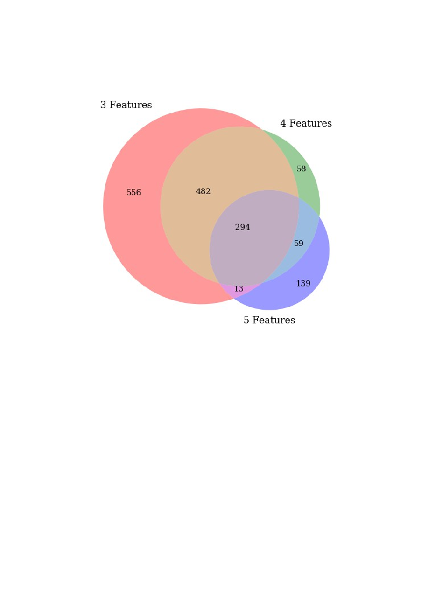
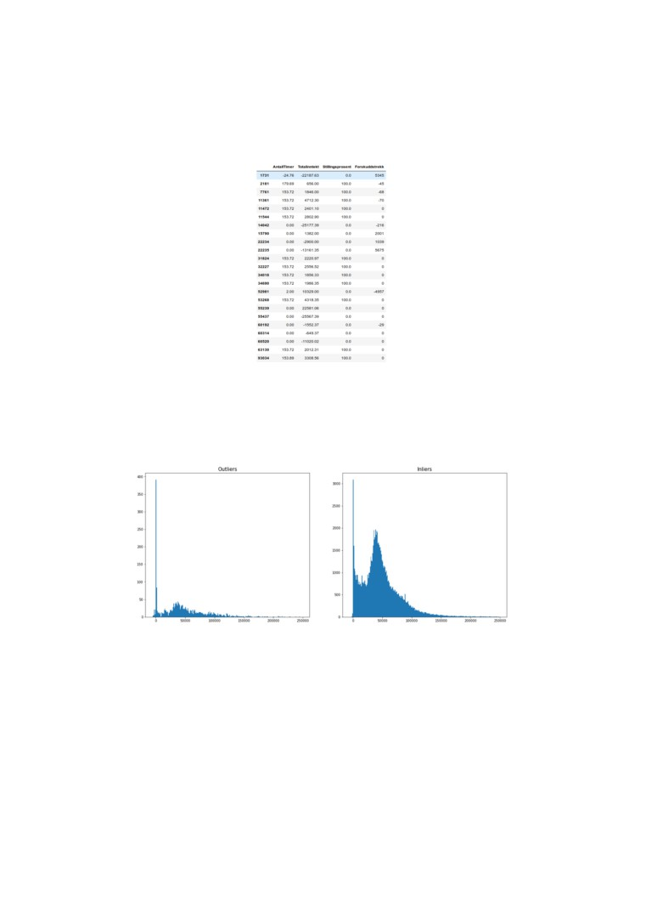
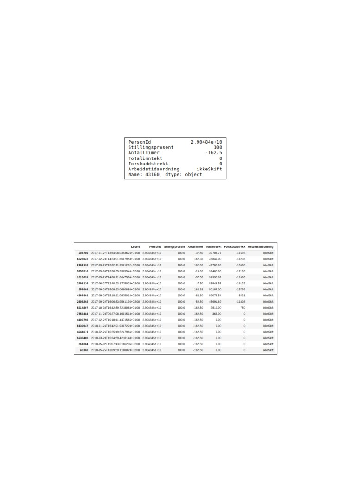

FACULTY OF TECHNOLOGY, ART AND DESIGN
Anomaly Detection on the Norwegian Tax Administrations
Production Data using Unsupervised Machine Learning
Techniques
Supervisors:
Anis Yazidi, Stefano Nichele, Nader Aeinehchi
Authors:
Kim Mikal Torp, Øyvind Innvær Mjelstad
André Fagereng, August Reinholt
PROSJEKT NR.
22
Institutt for Informasjonsteknologi
Postadresse: Postboks 4 St. Olavs plass, 0130 Oslo
TILGJENGELIGHET
Besøksadresse: Holbergs plass, Oslo
Privat
Telefon: 22 45 32 00
BACHELORPROSJEKT
HOVEDPROSJEKTETS TITTEL
DATO
Anomaly Detection on the Norwegian Tax Administrations
23.05.19
Production Data using Unsupervised Machine Learning
Techniques
ANTALL SIDER / BILAG
126
PROSJEKTDELTAKERE
INTERN VEILEDER
Kim Mikal Torp (s315278), Øyvind Innvær Mjelstad (s315273),
Anis Yazidi, Stefano Nichele,
August Reinholt (s301438), André Fagereng (s182417)
OPPDRAGSGIVER
KONTAKTPERSON
Skatteetaten
Nader Aeinehchi
SAMMENDRAG
Denne bacheloroppgaven er skrevet ved OsloMet i samarbeid med Skatteetaten. Gjennom
prosjektperioden har vi anvendt fire forskjellige ”unsupervised” maskinlæringsalgoritmer på
reell data. Vi har preprossesert og tilpasset denne dataen til de ulike algoritmene. Dataen vi
jobbet med stammer fra A-meldingen. A-meldingen er en rapport alle arbeidsgivere i Norge
leverer til Skatteetaten hver måned. Resultatene har så blitt nøye evaluert og sjekket opp
mot domeneeksperter.
3 STIKKORD
Anomaly Detection
Unsupervised Learning
Clustering
Abstract
Anomaly detection has become an important field of research as companies
turn towards obtaining and mining big data. Through computations one can
find trends and patterns that do not conform to the rest of the data. The ap-
plication of anomaly detection ranges from intrusion detection and surveillance
to data cleanup.
This thesis serves as a proof of concept for the Norwegian Tax Administration
(NTA), to give them an inclination of how anomaly detection techniques could
be applied to their data and what challenges they might face. Currently, if
an anomaly gets through the already in-place countermeasures, the NTA does
not have a system for discovering, nor handling those anomalies. The anomaly
will then propagate through the system to other agencies such as NAV and
Statistics Norway (SSB). The consequences can range from a transaction level
loss to reputational damage and revenue loss due to fraud.
Acknowledgements
The greatest appreciation to our internal advisers, Professor Anis Yazidi and
Associate Professor Stefano Nichele, for their continuous encouragement and
sharing of their expertise. Thanks to the OsloMet AI Lab for letting us use
their facilities.
A big thanks to our external supervisor, Nader Aeinehchi, for helping us
with time management, managing stand-up meetings every week and providing
us with what we needed throughout the semester.
Also thanks to Stian Simble Berglund and Wenche Tjelle Solbjør from the
Norwegian Tax Administration for providing excellent domain knowledge.
Contents
1
Introduction
6
1.1
The Norwegian Tax Administration
6
1.2
A-ordningen
6
1.3
A-meldingen
7
1.4
Motivation
7
1.5
Goal
7
1.6
Contract
8
2
Work Process and Methodology
9
2.1
Initial project planning
9
2.1.1
Startup phase
10
2.1.2
Data Analysis phase
10
2.1.3
Development phase
10
2.1.4
Analysis and Evaluation phase . .
10
2.1.5
Project Completion phase
11
2.2
Project Management
11
2.2.1
Meetings with the NTA
11
2.2.2
Meetings with supervisors
11
2.2.3
Dividing Tasks
13
3
Theory
14
3.1
Machine Learning
14
3.1.1
Features
14
3.1.2
Supervised Learning
15
3.1.3
Unsupervised Learning
15
3.2
Anomaly Detection
15
3.3
Clustering
15
3.3.1
K-means Clustering
15
3.3.2
Density-Based Spatial Clustering of Applications with Noise
18
3.4
Local Outlier Factor
21
3.5
Pattern Mining
22
3.5.1
Frequent Pattern Mining
23
3.5.2
Rare itemset Mining
23
3.6
Euclidean metric
25
3.7
Principal Component Analysis
26
3.8
Packages and Tools
26
3.8.1
Python
26
3.8.2
Pandas
26
2
3.8.3
Scikit-learn
27
3.8.4
Matplotlib
27
3.8.5
Numpy
27
3.8.6
Server
27
3.8.7
SSH
27
3.8.8
Jupyter Notebook
28
4
Data Analysis
30
4.1
Data Structure
30
4.2
Structural errors
33
4.3
Correcting Errors in the A-melding
33
4.3.1
Replacement ID
34
4.3.2
Correction Messages
34
4.4
Decoding
34
4.5
Feature Extraction
35
4.6
Missing values
35
4.7
Normalization
36
4.8
Visualizing the distribution of the dataset
37
5
Implementing the algorithms
43
5.1
Feature selection
43
5.1.1
Categorical data
44
5.1.2
Scaling the data
45
5.1.3
Principal Component Analysis .
45
5.2
Implementation of K-means
46
5.2.1
Elbow Method
46
5.2.2
Running K-means
49
5.2.3
Using K-means to detect outliers
50
5.3
Implementation of DBSCAN
52
5.3.1
Setting eps values
53
5.3.2
Setting MinPts values
54
5.3.3
Output
55
5.4
Implementation of Local Outlier Factor
55
5.4.1
Setting n-neighbors parameter .
55
5.4.2
Setting contamination parameter
55
5.4.3
Output
55
5.5
Implementation of AprioriRare
57
5.5.1
Quantization
57
5.5.2
Setting values
59
6
Results and Experiments
60
6.1
Results - K-means
60
6.1.1
Three features
60
6.1.2
Four features
64
6.1.3
Five features
68
6.1.4
Comparing K-means results
72
6.2
Results - DBSCAN
74
6.2.1
Three Features
74
6.2.2
Four Features
78
6.2.3
Five Features
83
3
6.2.4
Comparing DBSCAN results
86
6.3
Results - Local Outlier Factor
88
6.3.1
Three Features
88
6.3.2
Four Features
93
6.3.3
Five Features
97
6.4
Results - Rare Itemset Mining
102
6.4.1
Three features
102
6.4.2
Four and five features
105
6.4.3
Comparing AprioriRare results
107
6.5
Comparing the Results
109
6.6
Discussion
113
7
Conclusion
116
7.1
Future Work
117
4
Glossary
Abbreviations
DBSCAN
Density-based Spatial Clustering of Applications with Noise
LOF
Local outlier factor
ML
Machine Learning
mRI
Minimal Rare Itemset
NTA
The Norwegian Tax Administration
PCA
Principal Component Analysis
RIM
Rare Itemset Mining
SSB
Statistics Norway
XML
Extensible Markup Language
Translations
The data we received from the NTA was labeled in Norwegian, hence many
screenshots taken directly from the data contains Norwegian. The table below
contains the most important translations and their corresponding abbreviations.
They will be used throughout this thesis.
Antall Timer
Hours worked
Arbeidstidsordning
Working time arrangement (WTA)
Erstattermeldingsid
Replacement-Id
Forskuddstrekk
Prepayment deductions (PPD)
Korreksjonsmelding
Correction-message
MeldingsId
Message-Id
Stillingsprosent
Full-time equivalent (FTE)
Totalinntekt
Total income
5
Chapter 1
Introduction
1.1
The Norwegian Tax Administration
The Norwegian Tax Administration (NTA) is the government agency responsible
for resident registration and tax collection in Norway. The agency is subordinate
to the Ministry of Finance and employs around 6000 people. The NTA is one of
the largest IT-environments in Norway and they process huge amounts of data
related to the income of Norwegian taxpayers.
The Norwegian Tax Administration’s platform for A-ordningen (see 1.2)
benefits from an Event Driven Architecture. Phenomena occurring inside or
outside of the NTA are modeled as "events". Events are then queued as data
streams. Having processed an event, the system outputs a new event which
is written to another data stream. Data streams are often chained like Unix
pipe commands. If there is some form of error in the data, the error rapidly
propagates to the next parts of the chain. In worst case scenarios, errors may
propagate to external parts like NAV or SSB. External parts are dependent
upon the validity of the data they receive and process. The impact from getting
polluted data can damage the credibility of the NTA, as well as all the external
parts that are using the data. In accordance with the Statistics act of 1989,
Statistics Norway (SSB) is the central body for preparation and dissemination of
official statistics [14]. Therefore the quality of the data they use is of paramount
importance.
1.2
A-ordningen
A-ordningen is an efficient reporting service used by Norwegian employers to
report information about their employees. The information is passed to NAV,
SSB and the NTA. It is a digital service, submitted electronically through either
Altinns system or through the employers own payroll system. The NTA is
responsible for administrating the service on behalf of the other public agencies.
6
1.3
A-meldingen
A-meldingen is a monthly report that every employer in Norway is required to
submit to the NTA. The report consists of information about income, working
conditions, and preliminary tax for the employees, among other things. A-
meldingen should be reported at a minimum of once per month. A-meldingen
started to take effect from the 1st of January, 2015. The system it replaced
consisted of five different forms with different deadlines and recipients, which
made the reporting process tedious. A-meldingen was a long sought after im-
provement.
1.4
Motivation
Currently, the NTA has a set of pre-programmed validation rules for discov-
ering anomalies. Using Machine Learning (ML), the NTA aims to potentially
to discover new types of anomalies. Since the NTA is planning to give other
organizations access to A-ordningen, it is crucial to prevent anomalies. This
thesis aims to analyze the data in A-meldingen to detect potential anomalies.
1.5
Goal
Our goal is to utilize ML algorithms to detect anomalies in A-meldings that the
NTA receives from employers all around Norway. The data we received from the
NTA is unlabeled, meaning that there is no blueprint as to whether a specific
event is of normal or anomalous behaviour. There is definitely a need for a
system to detect and stop the anomalous data from propagating further down
the chain and into other systems that the NTA collaborate with. We aim to
detect anomalies based solely on the natural features of the provided data. We
will conduct three different experiments using four different anomaly detection
algorithms. The deployed algorithms will hopefully discover outliers currently
unknown to the NTA that might be anomalies. We will bring the results to the
NTA and have their domain experts evaluate them.
7
1.6
Contract
Anomaly detection of production data
Norwegian Tax Administration (Skatteetaten) is one of the largest IT-environments of
Norway. Skatteetaten processes daily huge amount of data. Our modernized platform has adopted
Event Driven Architecture. Phenomena which have occurred inside or outside of Skatteetaten are
modeled as "events". Events are then queued as data streams. Each process reads and processes
events from data (event) streams. Having processes an event, the output is a new event which is
written to another data (event) stream.
Data streams are often chained like Unix pipe command.
Using the above, Skatteetaten is able to quickly process huge data. The processing time could be
down to few seconds.
If there is some error in the data in one part of the "chain", the error rapidly propagates to the next
parts of the chain. In worst case scenario, an error may negatively affect many other systems in few
seconds. To counteract such error propagation, we would like to be assisted by computers to
analyze "data" for potential errors.
We would like to use Machine Learning to analyze structured data (e.g. XML or JSON) to detect
potential anomalies.
Contact persons:
Aeinehchi, Nader, Nader.Aeinehchi@skatteetaten.no
Stefano Nichelle, stenic@oslomet.no
Anis Yazidi, anisy@oslomet.no
8
Chapter 2
Work Process and
Methodology
In this chapter we will talk about how we planned and carried out the project.
We will also detail some of the methods and tools we used.
2.1
Initial project planning
Our plan was to apply various ML algorithms for detecting anomalies in the
data we received from the NTA. The A-melding data is confidential and the
NTA has provided us an anonymous dataset. Figure 2.1 illustrates how we
planned to distribute the phases over the course of the semester. There were
some deviations from this plan.
Figure 2.1: Gantt chart of project timeline
The data we received consisted of approximately 240 GB of XML files. These
files are encoded with base64 in order to ensure that the data remains unmodified
during transportation to the server. The specifications of server we used will be
discussed briefly in 3.8.6.
At this point we did not know anything about the data, except that it was
highly confidential and it had been anonymized once for internal use and then
9
again for external use. In order to create suitable solutions for this project, we
split the project into several phases. These phases included, as shown in the
Gantt diagram (figure 2.1): Startup, Data Analysis, Development, Analysis and
evaluation, and Project Completion. In the next few sections these phases will
be discussed in more detail.
2.1.1
Startup phase
During this phase we wrote all the required preliminary reports; the status
report, a project outline and the pre-project. These documents can be found on
our home area:
We were presented with a virtual machine set up in cooperation with the
NTA, containing all the encoded XML files. We spent some time getting to
know the data in order to establish a more concrete approach to the problem at
hand. We soon discovered that the data demanded an unsupervised (see section
3.1.3) approach. In this phase we also decided to do our code work in Jupyter
Notebook (see 3.8.8), and write our thesis in Overleaf which is an online LATEX
editor.
2.1.2
Data Analysis phase
The goal of this phase was to establish an understanding of the data and it’s
structure. The A-melding data we were given was stored as structured XML
files. This phase includes working "hands-on" with the data, getting an overview
of the distribution and of the features in the data. We transformed the data from
XML to the significantly smaller file type CSV, without changing the integrity
of the data. Furthermore, unnecessary data was filtered out based on input
from the domain experts at the NTA. This is further discussed in chapter 4.
2.1.3
Development phase
During the development phase we researched what algorithms that are currently
being used in these types of problems. As part of our contract (see section 1.5),
the NTA wants to use ML to analyze structured data to find potential errors.
In order to achieve this we decided upon using four well-renowned algorithms,
namely K-means clustering, density-based spatial clustering of applications with
noise (DBSCAN), Local Outlier Factor (LOF) and AprioriRare. These algo-
rithms all have different strengths and weaknesses in regards to finding outliers.
These algorithms will be discussed later in chapter 6. A reprocessing of data
and extraction of additional features will also be included in this phase.
2.1.4
Analysis and Evaluation phase
This phase contains a discussion about the results of each algorithm. These
results is then compared to the other algorithms. Hopefully, the algorithms will
discover similar outliers as this will improve the confidence as to whether an
outlier is an anomaly or not. See discussion in chapter 6.
10
2.1.5
Project Completion phase
In the last phase the focus mainly consisted of finalizing all the chapters and
individual sections, and doing some minor adjustments to the structure of the
report. Then we had some proof-readings before a final grammatical refresh.
2.2
Project Management
2.2.1
Meetings with the NTA
During our first meeting with the NTA we agreed upon the way the NTA would
be involved and how they could support us. The NTA has A-melding experts
that would help us a lot when reviewing the results. We also agreed upon having
one physical meeting every week at the NTA. The goal for these meetings was
to give the NTA an update on how we were progressing with the project and to
bring them the output from our algorithms for them to inspect. The meetings
lasted one hour and was very valuable for us during the first few months of the
semester. As the deadline for the thesis approached the meetings were ended
and communication with the domain experts proceeded through e-mail. We
also decided upon two Skype meetings every week, Mondays and Thursdays at
8:30.
2.2.2
Meetings with supervisors
In addition to the meetings with the NTA, we also had weekly meetings with
our supervisors, where we discussed more practical issues regarding our work.
The group met consistently three times a week to work on the thesis. We used a
meeting room at the AI lab at Pilestredet 52 as our main work space. We wrote
meeting minutes from our meetings with supervisors in order to keep track of
progress and to have an overview of the action points and plans for upcoming
week.
11
Figure 2.2: Example from one of the earlier meeting minutes.
12
2.2.3
Dividing Tasks
Trello is a web-based visual application for organizing work. We chose Trello
simply because it is free and easy to use. It contains all the necessary functions
to divide the tasks. We worked in one-week sprints where we by the end of
each week created a new set of tasks to add to the backlog. This ensured that
we always had tasks to work on. We did not follow any specific development
methodologies, but we had the most similarities to the agile framework Scrum.
We held standup meetings with the NTA twice a week, and we worked in one
week long sprints where we completed the backlog before creating new tasks.
Figure 2.3: Screenshot of the ’Backlog’ in Trello.
13
Chapter 3
Theory
This chapter contains the theory of the different algorithms we applied to the
data. Other relevant sub-fields of machine learning that are mentioned in this
thesis are also presented in short.
3.1
Machine Learning
Machine Learning (ML) aims to create systems that can learn a generalized
solution to a problem without being explicitly programmed to do so. It uses
statistics and mathematics to look for patterns in the data. Then it adjusts
its parameters according to the patterns it deems useful. There are three main
paradigms of machine learning, namely supervised, unsupervised and Reinforce-
ment Learning. The different sub fields all depend upon the data you have.
3.1.1
Features
In ML a feature can be described as an individual characteristic of a phenomenon
being observed[3]. They are represented as a column of data given as the input
to an algorithm or model. During this thesis they are referred to as either
features or dimensions.
Figure 3.1: Feature engineering in the machine learning workflow.
14
3.1.2
Supervised Learning
In supervised learning, the output for a given input value is predicted based on
the training data. The training data is data with ‘ground truth’ labels, that
help tweak the parameters of the model until the desired output is achieved.
Supervised techniques helps the model to correct its output and predict what
comes next based on its training data. This can in some ways be seen as a form
of qualified guesswork, as the algorithm tries to group the input into a category
it knows already, and not as a measure of ’intelligence’ per se.
3.1.3
Unsupervised Learning
Data mining is a sub-field of ML and it revolves around exploring the data
through unsupervised algorithms. Unsupervised techniques takes unlabeled in-
puts, which means that the algorithm has to try to classify the data on their
own merit. The most common method as of right now is clustering algorithms
(explained below in section 3.3).
3.2
Anomaly Detection
Anomaly detection revolves around finding data points that do not conform
with the rest of the dataset. An anomaly is a data point which is different from
the norm with respect to the features of that point. In the context of the NTA
data, an anomaly might be a person working 2500 hours per month. There
are several difficulties to overcome when working with anomaly detection. One
of the major problems is that there is a lot of noise in the dataset which can
be misinterpreted as abnormal behavior. We have used four different anomaly
detection techniques, each with their own pros and cons. They will be presented
later in this chapter.
3.3
Clustering
The purpose of clustering is to arrange a collection of data into groups (clusters),
where items within the same cluster are similar to each other in terms of their
properties and/or features. Clustering algorithms are used when there are no
labels or classifiers. It is a common technique for statistical data analysis across
many fields [8].
3.3.1
K-means Clustering
Originally proposed by Stuart Lloyd in 1982 as a method for pulse-code mod-
ulation in signal processing [11], K-means clustering is now one of the most
popular ML algorithms for analyzing clusters in data mining. Used as an un-
supervised learning algorithm it performs computations on the actual dataset
without prediction and with no need for labeled training data.
The aim of the algorithm is to group n similar data points in a unlabeled,
multidimensional dataset into k predetermined clusters. Each cluster centroid
is the arithmetic mean of all data points belonging to that cluster, and each
15
point is closer to its own centroid than to another centroid. This results in a
partitioning of the data space into Voronoi cells.
To achieve this, K-means employs an iterative refinement technique similar
to the Expectation-maximization algorithm that is used a lot in data science.
Although some computer scientists refer to the algorithm as Lloyd’s algorithm,
it differs slightly from Lloyd’s in that it’s input is a discrete set of points and
not a continuous geometric region. Instead the “K-means algorithm” should be
used when referring to it.
The standard algorithm works as follows:
Figure 3.2: Example of randomly placed centroids with k = 2.
Firstly, based on the k number of clusters input, the algorithm guesses k
instances of centroids randomly (Figure 3.2) which are then used as a starting
point for calculating the clusters.
Figure 3.3: Each data point is assigned a cluster based on it’s nearest centroid.
The algorithm then proceeds with the assignment step (Figure 3.3). Here
16
each data point is assigned to the cluster of its nearest centroid. This is done by
calculating the least squared Euclidean Distance (see 3.13) from the data points
to the centroids using the formula:
{
S(t)
=
xp :
xp − m(t)
2 ≤
xp − m(t)
2 ∀j,1 ≤ j ≤ k},
i
i
j
where each xp is assigned to exactly one S(t), even if it could be assigned to
two or more of them. [27]
Figure 3.4: The centroids are updated based on the new clusters.
Next, in the update step (Figure 3.4) the algorithm calculates and updates
the centroids using the formula:
∑
1
m(t+1)
=
xj
i
t)
S(
i
xj ∈S(t)
i
Simply explained, this calculates the average location of all the data point in a
cluster and then moves the centroid to that location.
17
Figure 3.5: The data points are assigned new clusters.
Then it proceeds by alternating between the assignment step and the
update step repeatedly. Each of these repetitions should, under normal cir-
cumstances, always result in a better estimation of the cluster characteristics.
Figure 3.6: K-means has converged.
The algorithm finally converges (Figure 3.6) when the assignment step
no longer changes any data points to new clusters. Although the algorithm
is guaranteed to converge [20] , there is no guarantee of finding the optimal
clusters.
3.3.2
Density-Based Spatial Clustering of Applications with
Noise
DBSCAN was first introduced by Martin Ester, et al.[6], in 1996 and is a com-
mon clustering algorithm in unsupervised machine learning. DBSCAN is a
density-based algorithm in which the goal is to identify dense regions of data
18
separated by areas of low density, often labeled as noise. In other words, data
within dense regions are considered as part of a cluster while data outside clus-
ters is considered as noise. Unlike other cluster algorithms such as K-means
(see 3.3.1), DBSCAN is designed to discover an arbitrary number of clusters of
spacial data with arbitrary shapes or forms, as-well as noise It does this without
having to define a number of clusters prior. The illustrations in figure 3.7 shows
how DBSCAN can discover clusters of different sizes and shapes. We also notice
that the points along the edge of the image are not part of any clusters, meaning
that they are likely to be labeled as outliers.
Figure 3.7: Traditional clustering method such as K-means would struggle to
differentiate the clusters. The image on the right visualize how DBSCAN could
have clustered the data. Image taken from [12].
The Algorithm
To explain the algorithm, we start by defining the two most important parame-
ters required to be initialized, namely eps and M inP ts. An intuitive definition
for these parameters is the following: eps is a value which represents a fixed
radius from a arbitrary data point. M inP ts is a value which defines a re-
quired amount of nearby points to a selected data point, to form a cluster.
The algorithm starts by selecting an arbitrary data-point p, and calculates how
many neighbouring data points there exists within eps radius. If there exists an
amount k ≥ M inP ts within eps radius of the point p, a cluster will be formed.
Conversly, if this criteria is not met, the algorithm selects a new point and re-
calculates for that particular data point. By traversing through all the points
in a dataset, data-points will be labeled as part of a specific cluster, or as noise
("Outlier").
There are three types of data points in the DBSCAN algorithm. Their type
is determined by the number of neighbours within a radius of eps. The first
one is called a core point. A point is ’core’ if the number of neighbours within
eps radius are greater than or equal to the M inP ts value. Usually, most points
within a cluster are core points. The second type is called border points. These
are points that lie on the border of a cluster. These are determined by checking
if there exists another core data point within eps radius. This means that the
data point in question does not require a number of M inP ts within eps radius
to form a cluster, simply a core point is needed. The last type of points is often
referred to as noise or outliers. These are points that do not meet the criteria
of M inP ts within eps radius, and are also not attached to a ’core’ point.
19
Inspecting figure 3.8 below, we observe that the core point does meet the
criteria of M inP ts = 3 within eps radius, illustrated as the dotted line. The
border point does not meet the core point criteria, but is ’attached’ to a core
point, making it a part of that cluster. The outlier points has no neighbouring
corepoint within eps radius and is therefore labeled as an outlier.
Figure 3.8: Illustration of the different type of points.
Referring to the original DBSCAN paper [6], we will introduce some sim-
plified definitions that will illustrate some of the important aspects of the al-
gorithm in more depth. These aspects define some traits that DBSCAN holds,
e.g. detecting clusters of arbitrary shapes and sizes as shown in figure 3.7.
Definition 1 - (Epsilon of a point)
The epsilon value is defined as the radius of a point p. A point q lies within the
epsilon of point p if
dist(q, p) ≤ eps
where dist(q,p) is the distance metric.
Definition 2 - (Directly density-reachable)
A point p is directly density-reachable to point q if
dist(q, p) ≤ eps
and
Neps(p) ≥ MinPts
where the latter is defined as; The number of neighbouring points within eps is
greater or equal to parameter MinPts. This implies that point p is a core point.
Definition 3 - (Density-reachable)
A point p is density-reachable from point q, if there exists points p1,p2...pi
in which fulfills definition 2 (directly density-reachable). Thus a point p can
possibly be density-reachable to q, by chained data points.
20
Definition 4 - (Density-connected)
A point p is density-connected to point q, if both p and q are density-reachable
from a third point o with respect to M inP ts and eps.
Definition 5 (Cluster)
A cluster in a dataset, d, is a non-empty subset of that dataset and satisfies
the following conditions: All points inside the cluster are mutually density-
connected (def. 4). If a point is density-reachable (border point), it is part of
the cluster.
3.4
Local Outlier Factor
Local Outlier Factor is an unsupervised density-based algorithm developed by
Breunig et al.
[4] in 2000. The algorithm proposes a degree of ’outlierness’
of a point, as an alternative to binary outlier detection models. Each point of
a data-set is assigned a degree, which represents the local outlier factor with
respect to its k-nearest-neighbours. This k-nearest-neighbours variable is set
prior to applying the algorithm, to define the amount of neighbouring points in
which to compare the local densities with.
In order to describe this algorithm more thoroughly, we will introduce two
formulas. Reachability-distance (reach-dist) and local reachability density (lrd).
Also a third notation k-distance is explained below.
The Algorithm
K-distance
The k-distance of a point is merely the distance from a point p, to the k-th
nearest neighbour. I.e. k = 5, k-distance is the distance from point p, to its
fifth nearest neighbour.
Reachability-distance
reach-dist(q, p) = max(k-distance(p), dist(q, p))
The reachability-distance between two points, is the maximum of the k-
distance, and the distance between the points.
Lrd
)
(Σxreach-dist(q,x)
lrd(p) = 1/
|Nk (A)|
The local-reachability-density takes all the reachability-distances from a spa-
cial point to its k-nearest-neighbours, and calculates the average distance to
these points.
The k-distance is used to calculate the reachability-distance which measures
distance between two points. For a point p, we calculate this k-distance to all
the k-nearest-neighbors. Now that we have the distances to all the k points
21
closest to p, we can calculate the local reachability density (lrd) of that point.
The lrd is basically the average distance from p, to all the k-nearest points.
After this is done for all points in the dataset, we can then compare the lrd
of point p, with the average lrd of its k-nearest points. This is simply a ratio
calculation which tells us whether this point p has a higher lrd distance than
the average of its k-nearest points. In short, if this ration r > 1 of a point p, the
point has a greater local outlier factor score (LOF score) than its k-neighbors.
In contrast to DBSCAN, the only hyper-parameter required for LOF is n-
neighbours often denoted as k-nearest-neighbour or k. As stated earlier, this
variable defines the amount of neighbouring points of a point p, to compare the
local density with. A second valuable parameter is contamination. In short,
when we have calculated the local outlier factor of each point, these values are
sorted in ascending order. The contamination variables defines the percentage of
these outlier factors we would like to define as outliers. If we set contamination
to 0.5, 5 percent of our data will be labeled as outliers.
Shown in the image, k is set to 3. The circle around the points illustrates
the distance to the k-th point. We can easily see that point o, has a larger lrd
than its k-neighbor points, thus its local outlier factor will be higher than 1 with
respect to the k-neighbouring points.
Figure 3.9: LOF k = 3 [6]
3.5
Pattern Mining
Pattern Mining is a subfield of data mining that consists of several data mining
algorithms for discovering unknown patterns in a transactional database. These
relationships or unknown patterns can be defined as association rules if their
occurrence is higher than some confidence level. Originally, pattern mining was
used in Market Basket Analysis (MBA) [25]. MBA is a modelling technique
based on the theory that if a consumer purchases a certain group of items
(an itemset), they are more/less likely to get another particular itemset. This
knowledge can then be utilized to enable marketers to develop and implement
customized marketing strategies like store coupons, the placing of items in their
stores, and cross-selling items. In this section we will discuss the basic idea
22
behind pattern mining and introduce unsupervised Rare Pattern Mining and
AprioriRare, which is the algorithm we used for mining minimal rare itemset.
3.5.1
Frequent Pattern Mining
Frequent Pattern Mining was first proposed by Agrawal et al.[1] and the mo-
tivation was to find correlations and association rules between transactions in
a large transaction database. The idea behind frequent pattern mining is that
there are hidden ’rules’ between transactions that can be found by looking at
collections of items that are frequently bought together. An association rule
can be represented as A, B ⇒ C, meaning that item C is likely to be bought if
the consumer also purchases A and B.
Initially, identifying frequent patterns were the only interest for the pattern
mining community. The rare patterns were considered unimportant because
they did not adequately reflect the global trends and characteristics of the data.
The frequent patterns on the other hand, could be used for both modelling
and prediction, as well as provide valuable information about the consumer be-
haviour [23]. However, since the early 2000s the popularity of Rare Itemset
Mining (RIM) has risen as researchers have experienced an increase in the de-
mand for anomaly detection applications. Discovering infrequent patterns is
very valuable in fields like medicine, genetics and network security as they can
cause harm if they go undiscovered. Many businesses can benefit from knowing
about frequent patterns in their data, but one can harvest a lot of valuable
information by instead looking for rare patterns, or anomalies. These patterns
could represent previously unknown or unforeseen relationships. The rare pat-
terns can then be manually reviewed by domain experts to determine credibility
and usefulness.
3.5.2
Rare itemset Mining
Rare itemset mining is similar to frequent pattern mining, except that instead
of looking for the frequent patterns in the data, it looks for the anomalies. In
this section we will introduce two terms which one should be familiar with in
order to follow along, namely support and minimal rare itemset. Support is
the threshold that decides whether or not an itemset is labeled frequent. The
support of an itemset X is defined as:
σ(X)
S =
|T |
This means that an itemset X = {x1, x2, xn, ...} is frequent only if the equa-
tion below is true.
S(X) ≥ minSupp
But if the equation is not true, it does not mean that the itemset automat-
ically is a minimal rare itemset (mRI ). A mRI is an itemset where the whole
set combined is rare/infrequent, but all its subset are frequent. As an example
consider the following transactions with support threshold St = 3:
Each transaction consists of an itemset with 2-4 different items and no single
item appear more than once in every transaction/itemset.
23
Transaction
Itemset
T1
{ 1, 2, 3, 5 }
T2
{
2, 3, 5 }
T3
{ 1, 2, 4, 5 }
T4
{ 1, 2, 3, 5 }
T5
{
1, 3 }
Figure 3.10: Transaction example with support threshold = 3
The support of an itemset is determined by the frequency of the set across
all sets and subsets. In Figure 3.10 the support threshold is set to 3. This
means that every set and subset with a support greater than or equal to 3 is
considered frequent. The subset ts = {1, 2, 3} has a support of 2 because there
are two sets or subsets containing all three items, namely T1 and T4. But is the
set a minimal rare itemset? Yes, all the subsets of ts are frequent because their
support is greater than or equal to 3. This means that ts is a mRI and will
be flagged as an outlier. In figure 3.11 on the next page one can see a visual
representation of the algorithm with the same transactions as in figure 3.10.
Figure 3.11: Overview of Minimal Rare itemset. The support of each set is
represented with roman numerals in the top left corner of every box.
We implemented an algorithm called AprioriRare. This is a RIM algorithm
24
which finds mRI s. The algorithm is a modified version of the Apriori algorithm
[7], illustrated in figure 3.12. Apriori is a frequent pattern miner, but it also finds
mRI as a byproduct. AprioriRare saves these instead of the frequent itemsets.
Details about the implementation of the algorithm will be discussed in chapter
2 and results and analysis will be presented in chapter 6.
Figure 3.12: Pseudo code of the Apriori algorithm
3.6
Euclidean metric
The euclidean metric, often referred to as the L2-norm in mathematics, is a
distance function often applied to machine learning algorithms. It measures the
distance between two points in n-dimensional space in a "straight-line" manner.
√
d(q, p) =
(q − p)2
The formula shows the euclidean distance between two points in 1-dimensional
space. This can easily be extended to n-dimensional space.
√
d(q, p) =
(q1 − p1)2 + (q2 − p2)2 + ...(qn − pn)2
As illustrated in Figure 3.13, we want to determine the euclidean distance
between two points, p and q in 2-dimensional space.
√
d(q, p) = d((6, 4), (2, 1)) =
(6 − 2)2 + (4 − 1)2
d(q, p) = 5
The euclidean distance between p and q (the hypotenuse in this case), is 5.
25
Figure 3.13: Euclidean distance in 2-dimensional space
3.7
Principal Component Analysis
Principal component analysis (PCA) is probably the best known and most
widely used dimension-reduction tool [9]. It is a mathematical procedure that
uses the eigenvectors and eigenvalues of the data to transform sets of possibly
correlated variables into smaller sets of linearly uncorrelated variables called
principal components. These principal components can then be used as a
dimension-reduction tool that can reduce the number of dimensions in a data
set while still retaining most of the information.
3.8
Packages and Tools
3.8.1
Python
Python is a widely used programming language for Machine Learning. The
language itself is easy to pick up due to its syntax and consistency. Consequently,
the community is large and the libraries are many. Python has libraries for
Visualization, Statistics, Natural Language Processing (NLP) and Data analysis
among others. One can also interact directly with the code through Jupyter
Notebook (3.8.8) or the terminal. We chose python because it is the leading
programming language when it comes to Machine Learning, and we had some
experience with it from previous courses.
3.8.2
Pandas
Pandas is a popular open source Python package for data science. It provides
multiple powerful, easy-to-use tools and structures for data analysis and manip-
ulation. From Pandas we have mainly used the DataFrame, the most commonly
26
used pandas object, in our project.
The Pandas documentation defines the DataFrame as "a 2-dimensional la-
beled data structure with columns of potentially different types." [1] This means
that it stores data in rectangular grids in a similar style to spreadsheets or SQL
tables. Each row of these grids holds the different values of an instance, while
each column is a vector containing data for a specific variable. The rows of the
DataFrame can contain different types of values; such as numerical, characters,
objects, etc.
3.8.3
Scikit-learn
Scikit-learn is an open source machine-learning library for Python. It incorpo-
rates a wide range of different ML-algorithms, within regression, classification
and clustering. With its well documented and easy to use interface, it enables
beginners to easily start experimenting with machine learning. In our case, we
implemented several algorithms such as PCA, DBSCAN, LOF, K-means among
and other utility functions such as OneHotEncoding for categorical data.
3.8.4
Matplotlib
For visualization purposes we implemented a well-known and widely used vi-
sualization package, matplotlib. The library provides a wide range of different
tools for both 2D- and 3D-graphs and plots. In addition to using matplotlib
for visualization, we also used Pandas which also incorporates some easy-to-use
tools for histograms, scatter-plots and box-plots.
3.8.5
Numpy
Numpy is another well-known Python package used for numerical computa-
tions. It supports a variety of mathematical functions along with array and
matrix operations. A large number of other packages uses Numpy for efficient
mathematical computations.
3.8.6
Server
The virtual machine we got from the NTA is a Compute Engine instance on the
Google Cloud Platform. It is based on the Intel Sandy Bridge CPU platform,
with 6 vCPUs and 32GB of memory, and a 2TB persistent disk for storage.
The operating system is Ubuntu 18.04.1 LTS (Bionic Beaver). When working
with data provided by the NTA there were many security measures to consider.
Although the data has been anonymized two times, we could not store anything
locally. More about steps we took in relation to security will be discussed in
3.8.7.
3.8.7
SSH
Our guidelines mandated that we were not allowed to work with the given
data locally, the data could not leave the virtual machine set up by the NTA.
This necessitated the use of a secure connection, which we solved with the SSH
protocol. SSH uses public key cryptography to create a private/public key pair,
27
authenticating the host with the server, and enabling us to work securely and
easily on the VM without requiring a password. We set up SSH tunnels from
our browser to Jupyter 3.8.8 on the VM to further secure our work environment,
connecting a given port on the VM to a corresponding port on the localhost.
3.8.8
Jupyter Notebook
Jupyter Notebook is a web application which extends the console to a more
interactive and graphically enhanced environment. In Jupyter Notebook you
can write, document and execute your code, display output in rich formats,
and save and share your results with markup functionality and LATEX support.
Notebooks are saved as JSON (JavaScript Object Notation) files, and they run
on a kernel in a prespecified language, in our case Python 3. The kernel is
responsible for executing the code in the notebook cells. Figure 3.14 is an
example of the layout:
Figure 3.14: The basic layout of a notebook
We used Jupyter Notebook extensively for all our programming needs; cre-
ating and running the scripts for decoding and extracting, running the ML
algorithms and displaying the results. Jupyter Notebook gave us a powerful
graphical environment that enabled us to work with the data directly on the
server. This way we could see each others work and easily share knowledge and
code between group members in real time.
Related Work
There are lots of reviews discussing how to approach anomaly detection
problems. Schubert et al. recently provided a review of the DBSCAN algorithm
and its persistent relevancy to clustering and unsupervised learning [19].
Generative Adversarial Networks (GANs) can model complex high-dimensional
real-world data. Liu et al. proposes a Single-Objective Generative Adversarial
Active Learning (SO-GAAL) method for outlier detection, which can gener-
ate potential anomalies based on a mini-max game between a generator and a
discriminator [10].
In Fast Memory Efficient Local Outlier Detection in Data Streams [17],
Salehi et al. proposes a memory efficient incremental local outlier detection
algorithm (MiLOF) that yields better memory and time complexity then LOF,
while maintaing a comparable accuracy.
In the article Towards Rare Itemset Mining [24], Szathmary et al. propose
different optimized algorithms for mining rare itemsets.
Scalable Kernel K-Means Clustering with Nyström Approximation: Relative-
Error explores the K-means algorithm using kernel approximation (Nyström
approximation) as the distance metric, and not Euclidean distance. The algo-
rithm proposed is able to identify non-linear structures with reduced complexity
compared to previous attempts.
Applying multiple algorithms to a dataset might be yield a greater precision
for predicting potential anomalies in a dataset. Dimble et al. propose, in the
study called "A Framework for Outlier Detection in Geographical Spatial Data"
[13], a method using DBSCAN to remove noise from a geographical spacial
dataset and apply LOF to obtain possible anomalies in the resulting data.
Chapter 4
Data Analysis
This chapter contains the steps we went through when preprocessing the data
we got from the NTA. We spent a lot of time getting to know the data and
transforming it to formats we needed. We will also present measures of cen-
tral tendency of the features we used, and lastly, some visualizations of the
distribution and correlation between the features.
4.1
Data Structure
We received 240 GB of unprocessed and encoded data from the NTA at the end
of January 2019. This amounts to roughly 1% of one years worth of data that
the NTA receives through the A-Ordning system. The data extracted dates back
to 2016 and up until 2018. It has been chosen randomly, but the distribution is
evenly split among the three years period. The data had then been randomized
once for internal usage, and then another randomization was done to allow us
to use it externally. All information that could be used to identify people were
encrypted. The only information we thought would be interesting to know was
the occupation of each person. This information could have been used to further
explain outliers we discovered.
The structure of the data was XML files, and the information we needed was
stored inside tags. We used a Python library called ElementTree, which parses
the XML file to an iterable tree structure where each end tag is an object. This
enabled us to easily search for the tags we need and extract their values. With
the XML files being as complex and unwieldy as they are, and the number of
differently organized tags, the ElementTree library allowed us to narrow in our
search as we went, and loop through subtrees instead of moving through the
entire file every time.
Figure 4.2 illustrates the tree structure of the XML documents we were
provided with. The boxes marked in red are the message-id and replacement-id
which will be discussed in section 4.3. The green ones are the most noticeable
tags and the ones that contained the information we extracted.
After building our selected fields, we parsed the results to a CSV file. CSV
stands for comma separated values and are easy to use together with libraries
such as Numpy and Pandas. The final CSV file had 7.967.200 lines and was 2.38
GB, where each line represents information about one employee for one month.
30
Unfortunately, this was still too large as we got memory-errors when running
LOF and DBSCAN. These two algorithms are computationally very expensive
and require a lot of memory. In order to counteract this we took a sample of the
first 100.000 data points from the CSV file and used them for our experiments.
The following sections describe the preprocessing we did to make the data
usable for the algorithms in our experiments. Figure 4.1 gives a birds eye view
of the process.
Figure 4.1: A step-by-step data Preprocessing Overview
31
Figure 4.2: Metaview of the XML tree structure
32
4.2
Structural errors
There were many XML files that were from a previous system, and in order
to catch these instances we had to create some additional if-statements. These
issues caused a lot of headache in the beginning as we were not aware that there
were as much as four different formats on the XML documents. Luckily about
99 percent of the data were on the new standard format. However, most of the
input fields in the A-melding are not mandatory, and a lot of them have few to
no restrictions on their content, so making sure everything is correct proved to
be a difficult task. We have tried our best to extract the correct values, but as
it is very hard to account for every fringe case, some of the anomalies we find
will possibly be due to unforeseeable oversights on our behalf.
4.3
Correcting Errors in the A-melding
The A-melding often contains errors because they are reported manually and
humans make mistakes. Skatteetaten deals with these errors in two different
ways, namely through replacement-Id and correction-message.
Figure 4.3: Screenshot taken from the NTA’s webpage. [21]
33
4.3.1
Replacement ID
The A-Ordning system is set up so that if an employer submits an erroneously
A-melding, he or she can send a new A-melding containing a replacement-Id
tag. This meant that a lot of the files we received were no longer valid and
needed to be removed in order to prevent clutter and invalid data points. Inside
these replacement-Id tag there will be an identification number which refers to a
previously sent A-melding. In figure 4.4 the XML-file contains the replacement-
Id tag with the value ’ER3166914’, meaning that it is replacing a previously
sent A-melding which had a message-Id tag with the value ’ER3166914’. In
order to maintain the integrity of the files, we had to be careful with the order
of operations in the script that handled the replacement-ids.
Figure 4.4: Screenshot of an XML-file with a replacement-tag.
After running the script that dealt with the replacement tags, the amount
of data was reduced significantly. From 240 GB to approximately 170 GB,
meaning that the size of the dataset dropped to about 70 percent of its original
size. One business can send everything from one to twenty different A-meldings
which all represent the same month and should overwrite the previous one. To
get the correct A-melding we had to follow the replacement-Id chain all the way
to the root.
4.3.2
Correction Messages
Correction messages are not labeled and does not have a replacement-Id. Instead
of replacing an existing A-melding, the correction messages overwrites some
parts of a previously sent A-melding. In order to identify which A-melding it
should overwrite, one has to look at the tags for employment start and end dates.
If these are the same date and the FTE percentage is set to 0 we are dealing with
a correction message. We noticed quite early that this ’rule’ was not necessarily
strictly followed by the people that submitted A-meldings. After consolidating
with the domain experts at the NTA, we concluded that the amount of correction
messages was probably not high enough to make a large impact on the dataset,
and thus we ignored all the potential correction messages.
4.4
Decoding
The files we were given from the NTA were partially encoded in base64. The
XML files had metadata in a header tag, and the actual A-melding was encoded
within an <Attachment> tag. The decoded string was a separate XML file
within the XML file, so we also had to remove the opening <?xml version="1.0"
34
encoding="UTF-8"?> tag in the attachment to be able to read the files. The
decoded files did not have the correct escape characters for the tags, so we made
a function to go through every file and replace every instance of < and >
with < and >.
Figure 4.5: Screenshot of a base64 encoded XML-file.
4.5
Feature Extraction
In Machine Learning, the concept of feature extraction consists of selecting sub-
sets of data to use in algorithms. The domain experts at the NTA suggested that
we start with the features: Total income, FTE percentage and hours worked.
The nature of these features are quite obvious as one would assume that the
higher percentage of employment an employee has, the higher the salary. Using
the results we got was a good indication that these methods could be used on
further and more obscure features that did not have blatantly obvious relation-
ships. It also gave us some other interesting insight into what anomalies could
look like.
4.6
Missing values
Because of null values in the XML documents, our feature extraction script
needed a lot of field validation checks. Due to the design of ElementTree we
could not enter null values during extraction to CSV. In these cases we had to
decide what value we should replace the null value with. We ended up with
35
inserting 0.0 into the numerical nodes and then used Pandas to handle them
later on. If we found a categorical feature with a null value it meant that the
XML-tag existed, but the child-tag with the information about the feature type
was not present. In these cases we dropped the whole tag as there was no
necessary information. Many values also had "TODO" which seemingly was
something the employers/accountants had inserted as a temporary value, but
had then forgotten to actually fill in. We decided to drop these as well.
In figure 4.6 below we see the sub-features of ’Inntekt’ and their correspond-
ing ratio of null values. The information is taken from the 100.000 data points
we used in the algorithms and does not represent the whole dataset. Even
though it is not the complete dataset it gives an inclination of how the data
is partitioned. Many of the features, like ’Smusstillegg’ and ’Bonus’ are very
rare but informative as they have a great impact on the salary of an employee.
Therefore we decided to create a new column called ’Totalinntekt’. This is the
total income for each person containing the sum of all XML-tags named ’In-
ntekt’. This is good indicator of how much a person actually earns and the
feature we used for income.
Figure 4.6: List of the different sub-features of income and their ratio of null
values.
4.7
Normalization
Normalization is a technique that prepares the data before passing it through
a machine learning model or algorithm. Normalization is applied to numerical
data to make the different features impact equally, but without changing the
differences in the ranges of values each feature may have. For example, in our
data set we have features that represent a persons income per month and number
of hours worked per month. The incomes ranges from negative values to several
millions, while the number of hours worked rarely exceeds 165-170. The range
difference of the these two features are huge, and the income will naturally have
a greater impact as a predictor. To counteract this behaviour, normalization is
used. Through normalization all the numerical features are weighted equally.
36
4.8
Visualizing the distribution of the dataset
On figure 4.7 below we see a heat-map of all the features we investigated during
this project. Most of the features in the first heatmap is part of the new feature
we call Total income. The heat-map show the correlation between the features.
The further away from zero, the bigger the correlation. A correlation coefficient
of 1 or -1 (100% or -100%) means that the relationship is linear. To find the
correlation coefficient ρ between two columns in a dataset one has to first find
the mean x and y of the two columns. Then subtract the mean x from each
individual point xi. Let a = x − xi and b = y − yi. Calculate a2, b2 and a · b.
Divide the sum a · b by the square root of a2 · b2 for every point xi and yi.
∑n
i=1(xi −x)(yi −y)
ρxy =
√∑n
∑n
i=1(xi −x)2
i=1(yi −y)2
Figure 4.7: Heatmap over all features
Figure 4.8 is a heatmap of the four main features we used. Total income
now includes many of the previous features in heatmap 4.7.
37
Figure 4.8: Heatmap over four features
The next few figures contains more information about the dataset we used.
It will revolve around the five features we focused on. These are as mentioned
earlier, full time equivalent (FTE), prepayment deductions (PPD), total income,
hours worked and working time arrangement (WTA).
1. PPD: As an employer, you are obliged to deduct withholding tax from
the salary you pay to employees and pay this to the tax collector.
2. FTE: State the FTE percentage which is stated in the employee’s em-
ployment contract.
3. Hours worked: Simply the number of hours a person has worked in one
month.
4. Total income: The total income is the sum of everything a person re-
ceives in one month. This includes all types of benefits including additional
charge for ’Smusstillegg’ and bonuses.
5. WTA: The WTA is an agreement concerning when in the day the work
will be performed and any variations in this arrangement over a period of
time.
Figure 4.9: Screenshot taken from the NTA’s webpage [22]
38
WTA
Median Mean Mode
Max
Min
ikkeSkift
48404
41572
104
6627727
-123652
skift365
38058
40765
26554
120635
-140
offshore336
74765
67201
52830
417661
-34521
doegnkont355
35811
36861
17
293346
-48579
helkont336
51270
51667
38814
171229
0
Figure 4.10: Measures of central tendency - Total income
WTA
Median Mean Mode Max
Min
ikkeSkift
162.38
131.59
162
4156.80
-486.50
skift365
158.05
142.82
158
326
-0.04
offshore336
134.23
134.52
134
168
-2.5
doegnkont355
153.72
110.95
153
307
-31
helkont336
145.49
132.60
145
272.79
0
Figure 4.11: Measures of central tendency - Hours worked
WTA
Median Mean Mode Max Min
ikkeSkift
100
82.35
100
2560
0
skift365
100
97.03
100
100
0
offshore336
100
98.92
100
100
50
doegnkont355
100
75.91
100
100
0
helkont336
100
91.57
100
100
0
Figure 4.12: Measures of central tendency - Full time equivalent percentage
(FTE)
WTA
Median Mean Mode Max
Min
ikkeSkift
-11528
-15353
0
39332
-2783645
skift365
-10144
-10086
0
91
-40010
offshore336
-24347
-28245
0
12306
-112216
doegnkont355
-10051
-10352
0
0
-146062
helkont336
-16710
-17035
0
0
-78486
Figure 4.13: Measures of central tendency - Prepayment deductions(PPD)
The following few graphs shows the four features distributed over WTA in
the form of whisker plots (box plots).
39
Figure 4.14: How to interpret Whisker plots
Figure 4.15: Whisker plot - Total income
40
Figure 4.16: Whisker plot - PPD
Figure 4.17: Whisker plot - FTE
41
Figure 4.18: Whisker plot - Hours worked
42
Chapter 5
Implementing the
algorithms
This chapter details the implementation of the four different algorithms: K-
means, DBSCAN, LOF and AprioriRare. We chose these algorithms because
they are all well renowned and well documented, and as they all work in different
manners, we hoped they would find different sets of outliers.
5.1
Feature selection
The first thing we had to do when implementing our algorithms was to load
in the CSV previously made of all the extracted data that seemed useful from
A-meldingen. With the use of Pandas, the CSV was loaded into the memory as
a DataFrame-object (Figure 5.1).
Figure 5.1: Snippet of the DataFrame from the loaded CSV.
Since we had decided to use only the first 100.000 data points, as some of our
algorithms were poorly optimized and struggled with using the whole dataset,
we created a copy of the DataFrame with only the first 100.000 points with the
df.head()-command. In this copy we also specified which columns we wanted as
we had decided which features we were going to use. When using three features
we specified total income, FTE percentage and hours worked. For four features
we used the previous three in addition to prepayment deductions. And for five
features we included working time arrangement as well (Figure 5.2).
43
Figure 5.2: Snippet of the extracted DataFrame.
The following was done when implementing K-means, DBSCAN and Local
Outlier Factor:
5.1.1
Categorical data
For the DataFrame copy with five features, the feature called working hours
arrangement (WTA) was categorical with five different possible values in text
form (figure 5.3).
Figure 5.3: The five different values of WTA.
Since the algorithms had no way of interpreting text and need their features
to be in a numerical format we had to convert this to a numerical representation.
To do this we used the Pandas .get_dummies()-method for one hot encoding
the values. This resulted in the WTA feature being converted into five new
features which could either be 0 or 1 (figure 5.4). In practice this left us with 9
features in total for our data.
44
Figure 5.4: Working time arrangement - one hot encoded.
5.1.2
Scaling the data
In the extracted data we used, some of our features were in low ranges such
as either a 0 or a 1, while others ranged from negative values up to a couple
of million. Because of this, to prevent a very skewed view of the data for our
algorithm, we needed to normalize the data into ranges between -1 and 1. To
do this we used Scikit-learn’s StandardScaler to standardize the features by
removing the mean and scaling to unit variance (figure 5.5) [15].
Figure 5.5: The DataFrame after scaling the values.
5.1.3
Principal Component Analysis
When using more than three features for our data we might start to suffer
from the curse of dimensionality [26]. I.e. the more features used the sparser
the feature space becomes. In addition, visualizing the data for humans also
becomes problematic when we reach dimensions higher than three. To combat
this we employed Scikit-learn’s Principal Component Analysis for dimension
reduction on our data when using four or more features.
Figure 5.6: The DataFrame after implementing PCA.
The downside to using PCA is that the we can no longer see directly what
45
each value represents for which feature. Instead they are represented as an x, y
and z feature (figure 5.6) which can’t be related directly back to the data. Since
Pandas retains the indexes of each data point in the CSVs we can compare these
later and find the original feature values.
5.2
Implementation of K-means
For the implementation of K-means in our project we first had to import the
kmeans package from Scikit-learn’s clustering library. We then used this to set
up a method called doKmeans (Figure 5.7) which we could use for running the
K-means algorithm on the dataset.
Figure 5.7: The doKmeans-method.
This method takes two parameters; X, which is the DataFrame-object we
are going to run K-means on; and nclust which is the k number of clusters we
want. We also had to specify which algorithm to use. The choice of algorithms
is between the classical EM-style algorithm referred to as “full” or the “elkan”
variation, which is more efficient by using the triangle inequality, but currently
doesn’t support sparse data [15]. We chose to use the “auto” option as this lets
the algorithm decide which one it finds more fitting for the data.
When running the method it returns two arrays. The first one is clust_labels,
containing a numerical label for each data point detailing which cluster it belongs
to in the range from 0 to k. The second one is cent, each clusters centroids
position as an x-, y- and z-coordinate.
5.2.1
Elbow Method
Determining the optimal number of clusters k to use in K-means is one of the big
issues when implementing the algorithm. There is no definitive "right" amount
of clusters and it is somewhat subjective. If you do not know the dataset well,
there are several methods to employ for determining the number of cluster.
One of these methods, and the one we chose to use, is the Elbow Method.
This method is used to compare the mean distance between data points and
their cluster centroid for increasingly high values of k. Since this distance will
shrink each time we increase the number of clusters, up until when k is equal
to our number of data points, we can plot this distance and then look for an
“elbow point”. An "elbow point" is where the rate of decrease shifts sharply in
the graph and we can use this point to determine an appropriate value for our
k.
46
Figure 5.8: The code for the Elbow Method.
When implementing the Elbow Method on our data we wrote a couple of
lines of code (Figure 5.8) to run K-means on the dataset for k-values from 1 to
9, calculate the mean distance for the data points to their cluster centroid for
each k and then store these values in a array called distortions. We could then
use this to plot the distances for each k.
Figure 5.9: The Elbow Method for three features.
When plotting the Elbow Method for three features (Figure 5.9) we see that
the "elbow point" occurs when k = 2 as this where the sharpest shift in our plot
occurs. As a result we chose k = 2 when running K-means on three features.
47
Figure 5.10: The Elbow Method for four features.
For four features (Figure 5.10) it seems like the "elbow point" is when k = 2.
One could argue that there is also an "elbow point" when k = 4, but since the
sharpest shift happens when k = 2 we chose to use this as our k.
Figure 5.11: The Elbow Method for five features.
Finally, for five features (Figure 5.11) we see quite clearly that the "elbow
point" is located where k = 3 so this is what we set our k for five features.
48
5.2.2
Running K-means
When we had chosen the k-value for each dataset we would run K-means on, all
that was left to do was running the method for each data set with the correct
k (Figure 5.12).
Figure 5.12: Running the doKmeans-method with k = 2.
This returned the clust_labels array with labels for all our data points, de-
scribing which cluster they belong to. We then appended this to our DataFrame
as the column ’kmeans’ (Figure 5.13).
Figure 5.13: Snippet showing which kmeans cluster each data point belongs to.
We decided to plot all our data points and colour them according to which
cluster they belonged to.
Figure 5.14: The two clusters of the data for three features.
49
Figure 5.15: The two clusters of the data for four features.
Figure 5.16: The three clusters of the data for five features.
5.2.3
Using K-means to detect outliers
After we had grouped the data into their respective clusters we needed a way
to determine which points we would consider outliers and thereby potential
anomalies.
50
Figure 5.17: Example of how we would detect outliers.
Since K-means does not have a built-in way of detecting outliers, we came
up with the idea to use the average euclidean distance from the data points in
a cluster to their respective cluster centroid as a metric. By using this we could
mark as outliers any data points that were further than x × averageClusterDis-
tance away from their centroid (Figure 5.17). The idea behind this was that
the clusters would most likely be centered around where most of the data was
concentrated. These points were unlikely to be anomalies, while points that
had uncommon characteristics and were more likely to be anomalous would be
located further away from the cluster center. The value of x was determined by
testing different values and looking at how many outliers we got registered for
each. We decided that we would use values of x where we got slightly less than
1% of the data marked as outliers.
51
Figure 5.18: Method for determining the average euclidean distance to cluster
centroids for each cluster.
To implement this we first had to create a method for determining what
the average euclidean distance to the cluster centroid for each cluster center
was (figure 5.18). We then stored each average distance in an array called
average_distance.
Figure
5.19: Method for determining which data points were x
× aver-
age_distance away from centroid.
We then used these distances to calculate for each data point whether they
were x× average_distance away from their centroid or not. If they were, they
got marked with a 1 in the DataFrame. We found x = 4 to be suitable for
three and four features, with 913 and 978 outliers found respectively. For five
features we had to increase the x to 10 to not end up with multiple thousands
of data points registered as outliers. With x = 10 we ended up with 804 outliers
detected for five features.
5.3
Implementation of DBSCAN
For the implementation of the DBSCAN algorithm, we used the cluster module
from the Scikit-learn library [5] for Python. The module is well-documented
52
and easy to understand. Since this is an unsupervised algorithm, the only input
needed is the data itself. The input fed to the algorithm was preprocessed in
order to scale the data and normalize its distribution (see 5.1.2). As the amount
of features in the datasets increased, we applied Principal Component Analysis
(PCA) in order to reduce its dimensions both for visualization purposes and to
remove redundant data in the set.
There are two mandatory parameters required to be set before applying the
algorithm to data, eps and M inP ts respectively. As stated in chapter 3.3.2, the
eps parameter acts as a radius-distance for a point and M inP ts as an integer
which defines the amount of nearby neighbors required to form a cluster. To
start with, we tested with several different eps and M inP tsintegers to get to
know the algorithm in practice. For the distance-metric, we used euclidean
distance.
5.3.1
Setting eps values
The original paper of DBSCAN [6] offers a heuristic method of setting the eps
value based on observations in a dataset. This method aims to find the k-dist of
the "thinnest" clusters in the dataset. In other words, the least dense clusters.
To explain how we did this, we reintroduce the k-dist of a point. As described
in chapter 3.3.2, the k-dist of a point is the distance from an arbitrary point p,
to its k’th nearest neighbor. The first step is to calculate the k-dist to every
point in the dataset and sort these values in ascending order. For this task we
applied the NearestNeighbors class from the Scikit-learn library[5] to the data.
Figure 5.20: Code for calculating k-dist graph
This graph is often denoted as the sorted k-dist graph. As recommended in
the original paper, "the threshold point is the first point in the first ’valley’ of
the sorted k-dist graph". Thus, we chose this valley point as the eps value for
our algorithm as illustrated in figure 4.3 and 4.4.
53
Figure 5.21: Eps for dataset with three dimensions
We applied the same method to the different datasets and got similar, but
not equal results, which is expected for data with different dimensions.
Figure 5.22: Eps for dataset with four dimensions
5.3.2
Setting MinPts values
While the eps parameter required to calculate the k-dist distance for every
point in a dataset, the suggested way to set M inP ts is more straight-forward.
The "DBSCAN revisited" paper [19] simply purposes to set the default M inP ts
parameter for 2-dimensional data to 4, and 2 times dimension for n-dimensional
data. As we only apply this algorithm to 3-dimensional data and higher, we
will use the latter suggestion.
54
5.3.3
Output
The output of the algorithm gives us indices of each data point and which cluster
it is assigned to. We used the Counter method from Python collections library
to get a initial view of how many clusters the data was assigned, and the amount
of data points in each cluster.
As shown in example output of DBSCAN in figure 5.23, we observe a dictio-
nary with keys and values. The keys represents a cluster, where -1 is appointed
noise or outliers. In this example, the main cluster 0 includes 88484 data points,
while -1 (representing noise) includes 399 data points. The other keys corre-
spond to additional distinct clusters with their amount of data points.
Figure 5.23: Output of DBSCAN
5.4
Implementation of Local Outlier Factor
The LOF algorithm was implemented and ran with the Scikit-learn neighbors
module. Similarly to all the other algorithms implemented, the only input fed
to the LOF class was the data itself, prepossessed with scaling and normaliza-
tion. In addition, Principal Component Analysis (PCA) was applied in order
to remove redundant data, and for visualization purposes.
For the LOF algorithm, there are several optional parameters for setting
distance-metric, contamination (percentage of outlier data) etc. but only one
mandatory parameter (n-neighbors) which needs to be tuned. For the distance-
metric we used euclidean distance.
5.4.1
Setting n-neighbors parameter
This parameter defines the amount of neighbors to a point, to calculate its local
density with. I.e. if we set this parameter to 3, all points in the data set will
compare its local density with the 3 nearest-neighbors, as explained in chapter
3.4.
5.4.2
Setting contamination parameter
In short, the contamination parameter defines the amount of data points to
categorize as outliers. Setting this parameter to 0.05, the algorithm labels data
points with the 5% highest LOF-score as outliers.
5.4.3
Output
The LOF algorithm returns two outputs, a list of the local outlier factor (neg-
ative_outlier_factor ) to each data point, as well as a list of binary labels that
describe points as either inlier or outlier (normal or abnormal).
55
We used this local outlier factor of the data points to get a visual repre-
sentation of the score that each observation had. The bigger the radius of the
observation, the higher the LOF-score. A subset of the data was ran with LOF
to illustrate how we used the output to visualize the LOF-score and the classified
labels.
In figure 5.24, a subset of the data was plotted in 2-dimensions with respect
to the three features, hours worked, FTE percentage, and total income. The
blue dots are labeled as outliers, while the yellow dots are labeled as inliers. The
red circles surrounding the points illustrates the LOF-score of each observation.
Figure 5.24: 2D plane representation of LOF-scores of each data point. Ran on
a small sampled dataset with three features.
We se that the red circles surrounding the blue dots have a larger radius as
a result of being labeled as outliers. In figure 5.25, we find similar observations
in three dimensions.
Figure 5.25: 3D plane representation of LOF-scores of each data point. Ran on
a small sampled dataset with three features.
56
5.5
Implementation of AprioriRare
For our Rare Itemset Mining implementation we used an open-source data min-
ing library in Java called SPMF, developed by Philippe Fournier-Viger [16]. We
used the algorithm AprioriRare. The input of this algorithm is a Transactional
Database Td that consists of several itemsets I = {i1, i2, ..., in} for n features.
Each item i is a specific value in a numeric column in the database. Every
transaction requires no duplicate values and must be sorted in lexicographical
order.
5.5.1
Quantization
This meant we had to develop a script to transform our detailed CSV file into a
compatible input for the algorithm. We achieved this by splitting the values into
quantiles, using the Pandas qcut()-method. This distributes the large number of
discrete values into evenly split percentages, normalizing the data in the process.
The extreme fringe points are collected in the top and bottom categories, while
most of the more common data points are somewhere in the middle. By adding
a different constant to each field, we ensured that they would always be sorted
in ascending order, meaning the first value would be between 0-99, the next
between 100-199, and so on (see figure 5.26). In our case, we further split
the FTE percentage into 10% chunks, placing negative values in the smallest
category and values over 100% in the largest category. See examples of this
process in figures 5.27 and 5.28:
Figure 5.26: Splitting into quantiles
57
Original input
AntallTimer
Stillingsprosent
Totalinntekt
Forskuddstrekk
0
162.38
100.0
42246.50
-13846
1
162.38
100.0
39317.00
-13760
2
162.38
100.0
38400.00
-11313
3
162.38
100.0
38740.50
-11034
4
162.38
100.0
8593.50
-860
7967194
126.60
100.0
28756.00
-7071
7967195
122.65
100.0
27317.80
-9307
7967196
126.42
100.0
28505.21
-6164
7967197
82.47
100.0
19827.43
-4280
7967198
37.50
100.0
9730.17
-1483
Figure 5.27: Unprocessed
Quantile output
AntallTimer
Stillingsprosent
Totalinntekt
Forskuddstrekk
0
43
110
253
335
1
43
110
247
335
2
43
110
246
345
3
43
110
246
346
4
43
110
213
383
7967194
29
110
230
362
7967195
28
110
229
354
7967196
29
110
230
365
7967197
22
110
223
371
7967198
13
110
214
380
Figure 5.28: Processed
58
5.5.2
Setting values
We then ran AprioriRare as described in figure 5.29. As the algorithm only looks
at the combinations of items in a set, the individual values can be represented
arbitrarily, and the index is used to reference the actual value after running
the algorithm. We have opted to limit the results to itemset combinations with
a single occurrence, selecting minimal support values to meet a threshold for
anomalies of approx. 1-2% of the total data. This is a threshold we decided to
aim for for all the algorithms, the intuition being that if it occurs more often
than this, it is less likely to be considered an anomaly. At the end we filter
the output further, sorting the values and removing duplicates, until the final
results is the list of indices of the data points flagged as anomalies. This list is
then used to find the actual data in the original CSV file.
Figure 5.29: Executing AprioriRare
59
Chapter 6
Results and Experiments
This chapter contains an in depth look and analysis of the results for the four
different algorithms: K-means, DBSCAN, LOF and AprioriRare. The results
are based on datasets with three, four and five features extracted from the A-
meldings. In this chapter, the y-axis of the histograms represents the frequency
of the distribution.
6.1
Results - K-means
Before looking at the results we expected that K-means would mainly find out-
liers outside of where most of the data points were concentrated. Since we have
based the outlier detection on how far points are from their cluster center, com-
pared to the average distance for the cluster, we suspect that we will mostly
find outliers where one or more of the features either have a really high or a
really low value. Ideally we would be able to find some outliers among the main
concentration of data points, but after seeing how the data looked and how the
cluster formed after running K-means this seemed unlikely.
For K-means we assume that for both three and four features we will find
many of the same data points as the fourth feature (prepayment deductions) is
supposed to be highly related to the total income feature, they both had the
same clusters k = 2 and we used the same, 4 × averageDistance metric for
marking them as outliers. For five features we suspect that we will get different
results, as mentioned in chapter 5.2.
6.1.1
Three features
When using K-means for anomaly detection on the three features total income,
FTE percentage and hours worked for 100.000 data points we ended up with
913 of those registered as outliers. Instead of looking at each point individually
we created histograms, both for the ones registered as outliers and the ones not,
to show the frequency of values and to analyze for what values of each feature
we commonly get registered outliers.
Since some of the values for our features are many times larger than the
rest the histograms will be very skewed and unreadable. To counteract this we
60
adjusted the top and bottom 1% of the values for each feature to a set max (the
top 0.99 quantile) and min value (the bottom 0.01 quantile).
Figure 6.1: Histogram of inliers and outliers related to total income
When comparing the two histograms for total income (Figure 6.1) we see
that although the majority of the income values are in the 0-100000 region, most
of the registered outliers occur when the income is much higher. Based on how
we have implemented k-means for registering outliers it makes sense to mark
abnormally high values as outliers. Because of this we can assume that most of
these are even higher than 175.000 and were among the ones that got reduced
when we adjusted the top 1%.
Figure 6.2: Histogram of inliers and outliers related to FTE percentage
Next, when looking at the histogram related to FTE percentage (Figure 6.2),
it is apparent that a very large majority has 100% specified as their percentage
of employment. Because of this a lot of our outliers occur when their percentage
of employment is 100%. From beforehand, when analyzing our data, we saw
that some data points had an abnormally high FTE percentage so its likely
that some of these are in the 100% bin, but were reduced when making the
61
histograms. The other major occurrence of outliers are when the percentage of
employment is 0%. From earlier data analysis we know that most data points
with 0% also have zero or a low number for their total income and hours worked.
Based on this we can make the assumption that a lot of the outliers with 0%
probably have an uncommonly high total income, hours worked or both.
Figure 6.3: Histogram of inliers and outliers related to hours worked
Lastly, when looking at hours worked (Figure 6.3) we see that most data
points are registered with right above 150 hours. Since the standard month of
work is considered 162,5 hours it is logical that this is the range where we find
the majority of data points and by extension also most of the outliers. We also
see that outliers are found either when hours worked is around zero or when
it is really high. The outliers for when hours worked is zero makes sense as
potential anomalies if they have a high value for either total income or FTE
percentage as it’s unlikely that someone with zero hours worked has a high
income or percentage of employment. The high values are probably registered
because they are very high, and although 300 hours worked a month, almost 14
hours per day, might not be impossibly high a lot of these are probably higher
and have been cut for the histograms.
After looking at the histograms we decided to plot all the 100.000 data points
in a 3D-space (figure 6.4) with total income, FTE percentage and hours worked
as the axis.
62
Figure 6.4: All 100.000 data points plotted, outliers marked in red.
When looking at the plot of the data we see that a lot of the earlier as-
sumptions about what gets flagged as outliers by K-means is correct. Almost
all the 913 registered outliers occur when either total income, FTE percentage,
hours worked or a combination of the three have either a very high or a very
low value. Because of how we used K-means for detecting these outliers, this
is in line with what we assumed would be the result. We see that when hours
worked passes a couple of hundred or when they are in the negatives they get
marked. This makes sense from a real world perspective of what is possible so
these might really be anomalous. As soon as someone has a FTE percentage of
more than a 100% they also get marked. Most of these might not necessarily
be anomalies, but the very high ones such as the one with 2500% are almost
certainly an anomaly. A lot of our registered outliers occurs when the total in-
come is above a couple of hundred thousand. It is hard to judge whether these
really are anomalous without any other references. We do also see that there
were a few registered outliers among the inliers, where most of the data points
are concentrated, this seem to not be a result of abnormally high or low values.
63
Figure 6.5: Closeup of the highest concentration of data points.
When looking closer at where most of the data points are concentrated (Fig-
ure 6.5) to look at these points we find that they do not seem to be anomalous
for any specific reason. More likely they seem to be a result of being just more
than 4 times the average distance away from their cluster center which is the
metric we used for determining points as outliers. We can assume from this
that they are most likely not anomalies. This serves as a testament to how
K-means is not very well suited for finding outliers inside big concentrations of
data points.
6.1.2
Four features
Next, when looking at the 978 outliers detected when we used the previous
three features as well as a fourth feature, PPD (prepayment deductions), we
once again decided that histograms would be a good place to start. These once
again had their max and min 1% values "cut".
64
Figure 6.6: Histograms for total income, FTE percentage, and hours worked
with K-means run on four features.
When looking at the histograms for total income, FTE percentage and hours
worked (Figure 6.6), they looked very similar to the previous histograms for only
three features. This was not unexpected as we assumed that it would still mark
most of the same data points as outliers.
65
Figure 6.7: Histogram of K-means for prepayment deductions.
For the histograms of the new feature PPD (Figure 6.7), we expectantly
found that most of the registered outliers have very low values, probably lower
than what the histogram shows. We see that the histogram almost looks like a
reverse of the histogram for total income. Since the two features are supposed
to be related to each other this might indicate that it is the same data points
that both have a really high total income and really low PPD getting registered
as outliers, and realistically these might not really be anomalies.
We wanted to plot the results of K-means on four features in a 3D-plot,
but since plotting in four dimensions is impossible we either had to use PCA to
reduce the dimensions, thereby losing the context of what each value represents,
or only plot three of the four features. We chose to do the second.
66
Figure 6.8: Plot of outliers for four features with total income, PPD and hours
worked as the axis.
First we plotted the results with total income, PPD and hours worked as the
axis (Figure 6.8). From this we can see that for the most part total income and
PPD are heavily related to each other and that our previous assumption might
be correct in that the ones with both high total income and low PPD might
not really be anomalies. We do see that a some of the high total incomes that
were marked as outliers do not have a correspondingly low PPD. These might
be more likely to be true anomalies.
67
Figure 6.9: Plot of outliers for 4 features with total income, prepayment deduc-
tions and FTE perentage as the axis.
When plotting for three features excluding hours worked (Figure 6.9) we
found nothing of any significance that we had not already previously seen and
since total income and PPD were generally highly related, excluding total in-
come for our plot yielded a plot very similar to when plotting for K-means on
only 3 features earlier, see figure 6.4.
6.1.3
Five features.
When running K-means with the five features: total income, FTE percentage,
hours worked, PPD, WTA (working time arrangement), and with a k = 3 we
registered 804 outliers. We assumed earlier that because of the increase in
number of clusters, as well as an increased x× average_distance metric, plus
the inclusion of a new categorical feature, the results from this would likely
differ more from the others.
68
Figure 6.10: Histograms for total income, FTE percentage, hours worked and
PPD with K-means run on 5 features.
69
When looking at the histograms for the features total income, FTE percent-
age, hours worked and prepayment deductions (figure 6.10), it looks like this
time the results are quite different from previously. For three and four features,
when looking at the outliers value for total income, most occurred when total
income was 175.000+. This time the values are more evenly distributed among
both high, low and in between. Ideally this means that the algorithm has not
just found outliers based on them having a high income, but rather considered
other factors as well. For FTE percentage it seems mostly the same as where
we found outliers previously. For hours worked surprisingly we found very few
outliers detected when the hours were high, instead they are mostly found when
the hours are zero or close to zero. Earlier we found most outliers where the
PPD had a very high negative value, for five features however we see that these
are now more evenly spread out in a similar fashion to total income. This comes
as no surprise as these two are heavily related.
Figure 6.11: Barplot of outliers and inliers for working time arrangement.
When looking at the barplot for the fifth feature, working time arrangement,
we find that all the detected outliers occur for data points with "ikkeSkift" as
their value. Although we know that this is what the majority of the data points
have as their value this is still a bit odd. Since this was categorical data that
was split into five different features when running the algorithm this might
indicate that the algorithm has not placed much value on anything other than
the "ikkeSkift"-feature or that the others were removed when we used PCA on
the data.
70
Figure 6.12: K-means on five features plot with total income, hours worked and
WTA as the axis.
We plotted the outliers and inliers with regards to their total income and
hours worked, features where we know we find a lot of excessively high values,
and WTA (figure 6.12) to see if there was a discernible reason for why all outliers
occured when WTA had the value "ikkeSkift". From the plot we see that for all
the data points with WTA values that are not "ikkeSkift" we do not really find
abnormally high values for any of the other features. This indicates that K-
means just did not find any outliers for any WTA values except for "ikkeSkift".
From this plot we also see that with K-means for five features a lot of the data
points with an unnaturally high number of hours worked do not get marked as
outliers whereas with the previous two experiments they did. Instead this time
a higher number of data points with a negative amount of hours worked got
marked.
71
Figure 6.13: K-means on five features plot with total income, PPD and FTE
percentage as the axis.
When plotting this experiment (figure 6.13) to look at the relationship be-
tween total income and PPD, as well as FTE percentage, we had hoped to find
that more of the data points with correlating values between total income and
PPD were disregarded as outliers and instead those with little correlation were
marked. From our understanding of how the data is related these are more likely
to be anomalies. This was not the case as fewer than in previous experiments,
of the points with little to no correlation, were marked as outliers. We also see
that data points with high FTE value were for this experiment marked mainly
as inliers, except for ones that had a higher total income. This also seems wrong
when looking for anomalies based on how we believe they should be related.
6.1.4
Comparing K-means results
To look at how the different experiments compared to each other we used a
Venn diagram of which data points each experiment had marked as outliers.
72
Figure 6.14: Venn-diagram for the different outliers detected when running K-
means.
From this Venn diagram we found the most overlap between the experiments
with three and four features (figure 6.14) which had 640 points in common.
Less so for the experiment with five features which had 200 overlapping with
the 3 feature experiment and 327 points overlapping the 4 feature experiment.
They all had 192 of the same points marked. We can assume that these were
most likely only the data points with the highest and lowest values for the
features total income, hours worked and FTE percentage. Although we had
hoped that the more features we included the better the algorithm would be at
detecting potential anomalies, when looking at and analyzing the results from
each experiment it might seem like this is not the case. Since we are not sure of
what exactly qualifies as an anomaly it is hard for us to determine which of the
experiments is better suited for detecting anomalies and whether they are any
good at all. We would need the NTA to look at the results before concluding
with anything. The results of the experiment might also be different if we had
used all 8 million data points instead of just 100.000, as this might be too little
for the algorithm to form good clusters.
73
6.2
Results - DBSCAN
This section shows the results for DBSCAN. As shown in the table below, the
data was scaled using Scikit-learns StandardScaler. In addition, datasets with
more than three features will have PCA applied for removing redundant data
and reduce dimensions for visualization purposes.
6.2.1
Three Features
Dataset and Parameters
Features Algorithm MinPts Eps
Metric
PCA Scale
3
DBSCAN
6
0.12
euclidean
No Yes
As described in chapter 5.3, we used the proposed way of setting M inP ts and
eps parameters. M inP ts is set as 2 × dimension (features). For three features
the following sorted k-dist graph can be seen in figure 6.15 below.
Figure 6.15: Sorted k-dist graph proposes the eps value for three features
Result
To get an initial view of the outliers/inliers in the feature space, we scatter-
plotted the data in figure 6.16 below. We have limited the X, Y and Z axis to
get a better view of the data, as only outliers were shown without limitations. In
total, 1345 data points were labeled as outliers with respect to the parameters
set. This suggest 1,345% of the data is potentially anomalous.
Observing the figures below, we can notice data points positioned in sparse
areas are all labeled as outliers. This is due to the parameters set before run-
ning the algorithm. In short, a data point for this dataset requires at least 6
neighbouring points within 0.12 epsilon radius. In addition, a data point can
also be labeled as inlier if it has at least 1 neighbouring point which fulfills the
requirement to be a core point as described in chapter 3.3.2. This trait enables
DBSCAN to easily locate global outliers with respect to the data. Clusters can
74
be of any shape, size and form, as we observe the horizontal line of inlying data
points in figure 6.16 and the main cluster in figure 6.17.
Figure 6.16: 3D graph showing the output from DBSCAN. Outliers are colored
blue, while inliers are colored yellow.
Separating the outliers from the inliers, we can observe that most outliers
lie outside of the dense areas in the data. As a result, we can assume that the
distribution of data will lie outside the regular/average values for the different
features. The inliers create a smooth cluster of data points connected to each
other by the M inP ts and eps parameters. In comparison to the LOF algorithm,
which is able to find local outliers, DBSCAN labels most of the local data points
within dense areas as part of a cluster. The reason for this, is that they exist
near very dense areas of data and holds a large number of neighbouring points
within the epsilon radius.
In addition, notice the tiny cluster on the right graph in figure 6.17. These
data points visually lie far from the main cluster due to the high values of FTE
percentage. From the parameters, we know that the amount of data points lying
in this cluster is above 6, and we also know that most lie within a 0.12 radius
of each other creating core points and border points. This shows the need for
tuning the parameters with respect to the data given instead of solely following
the proposed method of setting the parameters. This proposed method should
be viewed as an initial action rather than a final one.
75
Figure 6.17: Two 3D graphs showing the separated inliers and outliers from
DBSCAN. Outliers are colored blue, while inliers are colored yellow.
The histogram visualizing data with regards to total income (see 6.18) seems
to have a similar distribution to the inliers, spiking around 40.000. One big and
interesting difference is the amount of outliers containing the value 0 compared
to the inliers. As a large portion of inlier points contain this value as total
income, and almost no outliers contain this value, this suggests that outliers lie
outside dense areas of data and strengthens the assumptions that outliers lie in
sparser areas.
Figure 6.18: Histogram showing the distribution of outliers and inliers with
regards to total income
Unlike the histograms for total income, the histograms for FTE percentage
does not look similar in terms of distribution. Outliers tend to have a wide
spread range of values, and inliers tend to have either 0 or 100 as this value.
In addition, unlike total income distribution, a good portion of outliers have
average values such as 0 or 100 as FTE percentage. Assuming global outliers
should not have average values for the different features, this might seem strange.
An explanation for this could be that the these outliers containing average
76
values for FTE percentage, also contain uncommon/abnormal values for the
other features and therefore is still anomalous in terms of the data points.
Figure 6.19: Histogram showing the distribution of outliers and inliers with
regards to FTE percentage
Looking at the histogram for hours worked, we can observe a wide spread
distribution of values, ranging mostly from -100 to 500, but also a good quantity
above 500. As shown in the distribution for inliers, most of the data points
contain a value of 140-180 which is around average working hours. Some of
these bars have had their frequency clipped for visualization purposes. This
observation further strengthens the assumption that outliers lie mostly outside
the main cluster, and the majority should not have average values for features.
Figure 6.20: Histogram showing the distribution of outliers and inliers with
regards to hours worked
The heatmaps in figure 6.21 for inliers and outliers have some interesting
observations. For inliers, we notice a high positive correlation for hours worked
and FTE percentage (67.4%), and similarly a relative high positive correlation
for total income vs hours worked and FTE percentage. In comparison, the
outliers have nearly no correlation on the latter, and a lower correlation (42.2%)
77
for hours worked and FTE percentage. This suggests that there is a medium
strong correlation in the dense areas of data where inliers lie, while outliers tend
to have less or no correlation of feature data.
Figure 6.21: Heatmaps showing the correlation of the data for outliers and
inliers. Inlier heatmap on the left, and outliers on the right.
Key observations
- The assumption of outliers having non-average values for their features is
strengthened by the observations in both the histograms and heatmaps.
- As most of the outliers are global data points lying outside the main
cluster, we can assume that data points labeled as outliers tend to have
less- or uncorrelated features.
6.2.2
Four Features
Data set and Parameters
Features Algorithm MinPts Eps
Metric
PCA Scale
4
DBSCAN
8
0.17
euclidean Yes(to 3) Yes
As described in chapter 5.3, we used the proposed way of setting M inP ts and
eps parameters. M inP ts is set as 2 × dimension (features). For four features
the following sorted k-dist graph can be seen in figure 6.22 below.
78
Figure 6.22: Sorted k-dist graph proposes the eps value for four features
Result
Similar to the experiment with three features, we limited the X, Y and Z axis to
get a better view of the data. The four features were reduced to three with PCA
for visualization purposes, and in order to remove redundant data. Therefore,
the new dimensions are named PC1, PC2 and PC3, as they are the new features
which represent the data. We can observe the same outcome as figure 6.23 in
the previous experiment where outliers seems to lie outside the main cluster. In
total, 893 data points were labeled as outliers which suggests a percentage of
0.893% of the data.
Figure 6.23: 3D graph showing the output from DBSCAN. Data is reduced to
three dimensions with PCA. Outliers are colored blue, while inliers are colored
yellow.
Separating the outliers from the inliers, we can observe the same phenomena
as figure 6.16, where the inliers create a smooth clusters stretching to the less
dense areas. For this graph, observations of "mini"-clusters outside the main
cluster seems non-existent, unlike what we saw in the previous experiment.
This is most likely due to the increase of the M inP ts and eps parameters,
79
which means that there is a greater requirement to form a cluster.
Figure 6.24: Two 3D graphs showing the separated inliers and outliers from
DBSCAN. Outliers are colored blue, while inliers are colored yellow.
Comparing the histograms below (figure 6.25) with figure 6.18, we see nearly
identical distributions in terms of total income. The difference is the frequency
of the distinct distribution bins, which can be explained as this experiment
labeled close to 500 fewer data points as outliers.
Figure 6.25: Histogram showing the distribution of outliers and inliers with
regards to total income
For the histogram of FTE percentage (figure 6.26), the distribution also
seems identical with the distribution in the previous experiment. The outliers
containing 0 and 100 values for FTE percentage is close to the same as before.
Based on these observations for similar distributions in FTE percentage and
total income, we can assume that a good size of the same data points are labeled
as outliers in both experiments.
80
Figure 6.26: Histogram showing the distribution of outliers and inliers with
regards to FTE percentage
As for the distribution of hours worked (figure 6.27, we observe a similar
range as figure 6.20. Unlike the latter figure, more than an eighth of the outliers
here have 160 hours worked as their value, and a large portion contain a value
of 0.
Figure 6.27: Histogram showing the distribution of outliers and inliers with
regards to hours worked
For prepayment deductions (see 6.28), we see that more of the positive values
are registered as anomalies, as well as the values from -50.000 and below. We can
also see that the inliers with value 0 are more highly represented than outliers,
indicating that points with 0 NOK for PPD are in denser areas.
81
Figure 6.28: Histogram showing the distribution of outliers and inliers with
regards to prepayment deduction
Similarily to the heatmap in figure 6.21, we find low to no correlation be-
tween total income and both FTE percentage and hours worked for the outliers
(see 6.29). We also find a reduced correlation between hours worked and FTE
percentage. Prepayment deduction and total income show a higher correlation
for the outliers compared to the inliers, unlike our assumptions.
Figure 6.29: Heatmaps showing the correlation of the data for inliers (left) and
outliers (right).
Key observations
- Similarly to the experiment with three features, we observe that the cor-
relation between all the features drop, except for PPD and total income.
- Outliers tend to lie outside dense areas of the data. This shows that
the DBSCAN algorithm often labels global data points as outliers. With
this trait, we are able to detect data points with extreme negative or
positive values. Nevertheless, this trait is controlled by the M inP ts and
eps parameters, which means that if we set these parameters too high, we
might label sparse areas of outliers as inliers.
82
6.2.3
Five Features
Data set and Parameters
Features Algorithm MinPts Eps
Metric
PCA Scale
5
DBSCAN
10
0.2
euclidean Yes(to 3) Yes
As described in chapter 5.3, we used the proposed way of setting M inP ts and
eps parameters. M inP ts is set as 2 × dimension (features). For five features
the following sorted k-dist graph can be seen in figure 6.30 below.
Figure 6.30: Sorted k-dist graph proposes the eps value for five features
Result
In addition to all the features used in the experiment for four features, we added
a fifth categorical feature, working time arrangement (WTA). As this feature
contains categorical values, and the algorithms only take numerical values, we
had to convert this to numbers. For this we applied one hot encoding as de-
scribed in section 5.3. The data was scaled and had PCA applied, and the
parameters M inP ts and eps was changed with regards to the method described
in 5.3. In total, 503 data points were labeled as outliers which is 0.503% of the
total data.
Initially, the main difference between the previous graphs figure 6.23 and
figure 6.16, is that we can observe two larger clusters in figure 6.31, which is
quite interesting. The new feature added as a one hot encoded vector, reshaped
the data. We still find that the outliers lie outside of dense areas.
83
Figure 6.31: 3D graph showing the output from DBSCAN. Data is reduced to
three dimensions with PCA. Outliers are colored blue, while inliers are colored
yellow.
Separating the outliers from the inliers in figure 6.33, we can observe the two
main clusters creates a smooth surface. From the output of the algorithm in
figure 6.32, we recognize two large clusters consisting of 84550 and 12722 data
points. (Notice the -1 which represents the amount of outliers).
Figure 6.32: Output of DBSCAN, representing different clusters and the amount
of data points in them.
Figure 6.33: Two 3D graphs showing the separated inliers and outliers from
DBSCAN. Outliers are colored blue, while inliers are colored yellow.
The distribution regarding the outliers for PPD, hours worked and FTE
percentage has not changed noticeably compared to the previous experiments.
84
On the other hand, we observe a higher frequency of data points with 0 for total
income.
Figure 6.34: Histogram of the distributions of total income, PPD, hours worked
and FTE percentage in that order.
For the distribution of the new feature, WTA, we notice that more than half
of the outliers have "ikkeSkift" as its value.
85
Figure 6.35: Histogram showing the distribution of inliers (left) and outliers
(right) with respect to WTA.
Key observations
- Similarly with the previous experiments, most of the outliers lie outside
the dense area of data. In this case, we can observe two distinct clusters
from which the outliers are extracted.
- Histograms showing the distribution of the different features seem mostly
the same compared with the other experiments, except for the 0-bin in
total income outliers. This suggests that the different experiments does
not locate all the same data points as outliers.
6.2.4
Comparing DBSCAN results
In order to visualize and see the overlap between the different experiments,
we created a Venn diagram with the results from the different experiments.
From figure 6.36, we observe an overlap of 776 outlier points between three
and four features. The overlap contains roughly 86% of the outliers found for
four features. In addition, we can see an overlap of 366 points between four
and five features which anount to around 72% of the outliers found for five
features. This suggests that most of the data points labeled as outliers in the
experiments identifies mostly the same outliers.
294 points are overlapping
between all experiments. As we can not determine which data points qualified
as anomalous or not, it is difficult to assume something about which of the
datasets performed best. It would be interesting to further consult the domain
experts from the NTA and to use it on production data for each predicted
outlier, and investigate the points even further.
86

Figure 6.36: Venn diagram showing the similar outliers of the three distinct
experiments.
87
6.3
Results - Local Outlier Factor
This section shows the results for Local Outlier Factor. As shown in the table
below, the data was scaled using Scikit-learns StandardScaler. For this experi-
ment, the algorithm will compare the lrd of each data point with respect to 25
of its nearest neighbors, and select the top 2.5 percentage of the highest scores
as outliers.
6.3.1
Three Features
Data set and Parameters
Features Algorithm N-neighbors
Metric
Contamination PCA Scale
3
LOF
25
euclidean
0.025
No Yes
Results
In figure 6.37, the data is presented as a 3-dimensional scatter plot. The outliers
are colored blue while the inliers are yellow. The red circles depicts the LOF-
score of the point they surround. A higher LOF-score is indicated by a larger
circle. We also observe that most of the 2500 outliers are located within the
area of highest density. This is because the LOF algorithm specializes in finding
local outliers. The more ’obvious’ outliers that are located at the edges of the
3D space has a very small red circle.
Figure 6.37: Identical 3D plots of three featured data set from distinct view
angles. Outliers are colored blue, while inliers are colored yellow. Red circle
defines the LOF-score of outliers.
Limiting the X,Y,Z of the graph, we can inspect the local outliers within the
dense area of figure 6.38. Observing the outliers on the bottom right side of the
figure with the largest radius of red circles, we clearly see that these data points
are located in a sparse area relative to the dense area.
88
Figure 6.38: Identical 3D plots of three featured data set from distinct view
angles. Outliers are colored blue, while inliers are colored yellow. Red circle
defines the LOF-score of outliers.
In figure 6.39 and 6.40, we find the extreme values of the outliers sorted by
hours worked and FTE percentage. Inspecting these results, we see abnormal
values with respect to normal values of monthly hours worked and FTE per-
centage. For hours worked, we can observe values ranging from negative -488,
to positive 4156. For FTE percentage the extreme values are ranging from 500
up to 2560. In addition, we see from the left of figure 6.39, zero-values are
reported for both hours worked and FTE percentage, but are still reported with
an income.
Figure 6.39: Values for outliers sorted ascending (left) and descending (right)
by FTE percentage.
89
Figure 6.40: Values for outliers sorted ascending (left) and descending (right)
by hours worked.
Comparing these findings with the extreme values for the inliers, we still
observe similar abnormal values for hours worked, with numbers ranging from
-162 up to 1702. These extreme positive values are somewhat strange, since
the maximum amount of hours in one month is 744 hours. This indicates that
these data points are located in areas where the 25 nearest neighbouring data
points share a similar lrd and the algorithm not able to label these as outliers.
This shows a further need to tune the parameters to be able to pick these up as
outliers.
Figure 6.41: Values for inliers sorted ascending (left) and descending (right)
by hours worked.
In figure 6.42, 6.43 and 6.44 we observe the distribution of values for each
feature in the data set. On the left in all figures, we show the distribution of
outliers, and on the right we find the inliers.
Observing figure 6.42, the distribution of values for the outliers appears to
be similar to the distribution of the inliers. We found that the highest frequency
is 0, showing that over 200 of the outliers have 0 as total income.
90
Figure 6.42: Histogram showing the distribution of outliers and inliers with
regards to total income
Figure 6.43 describes the distribution with respect to hours worked. We can
observe most of the outliers contain value of around 160 hours worked monthly.
Over 1200 of the 2500 total outliers has this value as hours worked. Examining
the inlier distribution, we see a wide spread range of different hours worked,
thinning out from around 200 and up. Assuming outliers should lie in the most
dense areas, the distribution of the outliers seems mostly to be correct with
respect to only this feature, hours worked.
Figure 6.43: Histogram showing the distribution of outliers and inliers with
regards to hours worked
As for the distribution with respect to FTE percentage, over 2000 of the
2500 total outliers contain a value of 100. And almost 250 outliers contain
0. With respect to the inliers, these graphs seems almost identical in terms of
distribution. As the outliers reported by LOF tend to appear in denser areas,
these findings is probably correct.
91
Figure 6.44: Histogram showing the distribution of outliers and inliers with
regards to FTE percentage
Key observations
- Most of the outliers do not contain any extreme values in any of the three
features which again indicates that most of the outliers lie within the dense
areas of the dataset. Viewing the graph in figure 6.37, this makes sense
as the data points with the largest surrounding red circles are located in
the areas of highest density.
- As the input dataset is just a small sample compared to the complete set,
the outliers might not be labeled as outliers if a larger dataset were used.
- LOF is somewhat able to detect outliers with extreme values, but if those
values lie within the same average euclidean distance to each other, they
might still be labeled as inliers because of the n − neighbours parameter.
To demonstrate the third key observation we set the n-neighbors parameter
to 5, using the same data set. We obtained the following graph in figure 6.45.
We see that LOF now considers many of the previous global outliers from figure
6.41 as inliers.
92
Figure 6.45: Identical 3D plots of three featured data set from distinct view
angles. Outliers are colored blue, while inliers are colored yellow. Red circle
defines the LOF-score of outliers.
6.3.2
Four Features
Dataset and Parameters
Features Algorithm N-neighbors
Metric
Contamination
PCA Scale
4
LOF
25
euclidean
0.025
Yes(to 3) Yes
Result
For this data set containing four features, we implemented PCA to reduce the
number of dimensions to three. Below in figure 5.31, we plotted these three new
dimensions, PC1,PC2 and PC3, to visualize the output of the LOF algorithm.
As we set the contamination parameter to 0.025, the amount of data points
labeled as outliers will be 2500.
Initially we can observe a lot of the global secluded data points being labeled
as outliers with regards to the n-neighbors parameter. But similarly with the
3D graph showing the three featured data set in figure 6.37, the data points
with the highest LOF-score lies within the densest areas.
93
Figure 6.46: Identical 3D plots of four featured data set from distinct view
angles. Data is reduced to three dimensions with PCA. Outliers are colored blue,
while inliers are colored yellow. Red circle defines the LOF-score of outliers.
Limiting the X,Y and Z axis, we can examine the most local outliers in figure
6.47. Similar to figure 6.38, the data points with the largest red circles lie in
sparse areas relative to the dense. With regards to the different feature values
of the local outliers, we can assume the distribution will be somewhat similar to
the inlier distribution as we saw in the previous experiment with three features.
Figure 6.47: Identical 3D plots of four featured data set from distinct view
angles. Data is reduced to three dimensions with PCA. Outliers are colored blue,
while inliers are colored yellow. Red circle defines the LOF-score of outliers.
Looking at the values for the outliers with the highest LOF-score in figure
6.48, the most common observation is the zero-valued or low-valued PPD. In
addition, most of the rows containing these zero-valued PPDs has a frequently
high value for hours worked, as well as for FTE percentage, with a abnormally
low total income. As we can not conclude anything based on these values alone,
94

these are still the most "outlying" local outliers.
Figure 6.48: Values for the outliers with the highest LOF-score
Comparing the result from figure 6.42, the values in figure 6.49 seems more
evenly spread in terms of distribution with a high frequency around 0. This
implies that a large batch of outliers contain a value around 0.
Figure 6.49: Histogram of outliers and inliers with regards to total income
Similarly with the histogram from the three featured data set in figure 6.43,
we observe nearly equal distributions of features regarding FTE percentage (fig-
ure 6.50) and hours worked (figure 6.51). About 1750 outliers contain the value
of 100 for FTE percentage, and most of the hours worked distribution lies be-
tween 100-160. This makes sense, as the total amount of data points for three
features containing the same values, is around 70% of the data set.
95
Figure 6.50: Histogram showing the distribution of outliers and inliers with
regards to FTE percentage
Figure 6.51: Histogram showing the distribution of outliers and inliers with
regards to hours worked
As for the distribution of prepayment deduction (figure 6.52), we observe a
quite similar distribution with respect to the inliers. Over 400 outliers contain
a zero-value for this feature, while the rest seems normally distributed.
96
Figure 6.52: Histogram showing the distribution of outliers and inliers with
regards to "Forskuddstrekk"
Key observations
- Most of the outliers contain either regular values for all four features,
except for a large batch of outliers containing zero-values for total income,
hours worked and prepayment deduction. This is similar with what was
observed with the results for the three featured data set.
- As the algorithms goal is to detect local outliers, it makes sense that many
of the outliers contain high frequency values as they are located in dense
areas of the data, similarly with the experiment with three features.
6.3.3
Five Features
Data set and Parameters
Features Algorithm N-neighbors
Metric
Contamination
PCA Scale
5
LOF
25
euclidean
0.025
Yes(to 3) Yes
Results
For the last experiment we added the feature WTA. This being a categorical
value we first had to apply one hot encoding (see 5.1.1). We also implemented
PCA to reduce the number of dimensions from five to three. Below in figure 6.53
we see a 3D visualization of the output with five features. The contamination
is still
0.025, meaning that the algorithm will output the 2500 most outlying
points.
97
Figure 6.53: Identical 3D plots of five featured dataset from distinct view angles.
Outliers are colored blue, while inliers are colored yellow. Red circle defines the
LOF-score of outliers.
Figure 6.54: Identical 3D plots of five featured dataset from distinct view angles.
Outliers are colored blue, while inliers are colored yellow. Red circle defines the
LOF-score of outliers.
From the histograms (figure 6.55) for all five features we find that the dis-
tribution of where we find outliers, with regards to total income, were mostly
in the same range as the previous experiment with four features. When looking
at PPD, hours worked and FTE percentage we find that the same applies for
these as well, with only minor differences. This might indicate that LOF with
five features registers mostly the same outliers as with four.
98
Figure 6.55: Histogram of the distributions of total income, prepayment deduc-
tion, hours worked and FTE percentage in that order.
When looking at the distribution of outliers and inliers with respect to WTA
(figure 6.56) we find that the outliers seems to be distributed among all the
different values for WTA in the same fashion as the inliers. This might be a
coincidence or it might indicate that the WTA values are not very relevant for
the detection of outliers. The latter can be supported by also looking at the
Venn diagram comparing the algorithm on different numbers of features (figure
6.57).
99
Figure 6.56: Barplot of inliers (left) and outliers (right) with respect to WTA.
Comparing LOF results
When plotting the results for the three experiments in a Venn diagram (figure
6.57) we see that the the experiments for four and five features have much more
in common than the experiment with three. We had expected the results to be
somewhat different as we believed that increasing the number of features would
lead to the detection of different outliers. We did not however expect the results
for four and five features to be this similar. This could indicate, as previously
stated, that the feature WTA does not contribute anything significant to the
results. The WTA feature might have a stronger effect on the results if we
included features that are more strongly related to the different possible WTA
values.
100
6.4
Results - Rare Itemset Mining
Rare Itemset Mining differs from the three other algorithms used. As mentioned
earlier, AprioriRare looks at the combinations of itemsets rather than the cat-
egorical and numerical features. This means that we can expect the algorithm
to detect a different set of anomalies compared to the other clustering methods.
As with the other algorithms, we applied the algorithm on the same 100.000
data points in order to be able to compare the results.
6.4.1
Three features
Using AprioriRare with 0.015% minimal support on the features total income,
FTE percentage, and hours worked, we got 1435 outliers.
In most of the figures we see a strong similarity between the graphs for in-
and outliers, the main difference being the sheer volume of inliers compared to
outliers. This is to be expected, as the algorithm only considers combinations
of values, not the individual values themselves.
For total income (figure 6.58), there is a bigger emphasis on the lower end of
the spectrum, and the largest peak in occurrences for the outliers is slightly lower
than the peak for inliers. This indicates that the relative amount of outliers in
the largest block is not too severe, most of the outliers are occurring outside the
majority.
Figure 6.58: Histogram of inliers and outliers related to total income
For FTE percentage (figure 6.59), the overwhelming majority of inliers reside
at 100%, while the outliers are a bit more evenly distributed. This again shows
that a larger proportion of the outliers are distributed outside of the "normal"
working conditions.
102
Figure 6.59: Histogram of inliers and outliers related to FTE percentage
For hours worked (figure 6.60), most of the inliers are right above 150 hours,
which is equivalent to a 100% position, while in the outliers, this value is not as
highly represented.
Figure 6.60: Histogram of inliers and outliers related to hours worked
The above figures show the isolated values, however, due to the nature of
the AprioriRare algorithm, it can be more beneficial to visualize the results in
a more holistic fashion. The outlier data points may have one or two of the
features in a normal range, but the third is anomalous.
Figure 6.61 shows the data points in a three dimensional scatter plot, which
confirms the difference in approach between RIM and the clustering algorithms.
The anomalous combinations are not clustered together, but evaluated individ-
ually in relation to the complete data set. Some of the outliers are obvious
extreme values, however, most of them are not.
103
Figure 6.61: Scatter plot of inliers (blue) and outliers (red)
In figure 6.62 we can see heatmaps of the correllation between the features.
(a) Inliers
(b) Outliers
Figure 6.62: Heatmaps of inliers and outliers with three features
The inliers seem to have a more pronounced correlation between the features,
while the outliers have closer to no correlation. We see a consistently lower
correlation coefficient on all the feature combinations of the outliers compared
to the inliers.
Key observations
- The outliers tend to be distributed fairly similarly to the inliers, although
some extreme values are reported.
- The inliers tend to consistently correlate more than the outliers.
- The distribution of the histogram values are quite similar, however, for
three features, it seems that hours worked might be the primary source of
outliers due to the difference between the in- and outlier histograms.
104
6.4.2
Four and five features
Using AprioriRare with 1% minimal support on the features total income, FTE
percentage, hours worked, and PPD, we got 1184 outliers. See histograms in
figure 6.63.
Figure 6.63: Histograms of inliers and outliers with four features
Using AprioriRare with 1% minimal support on the features total income, FTE
percentage, Hours worked (Antall timer), prepayment deductions, and working
time arrangement, we got 1217 outliers. See histograms in figure 6.64.
Figure 6.64: Histograms of inliers and outliers with five features
In both these experiments, the graphs showing inliers and outliers are much
more similar, but the heatmaps in figures 6.65 and 6.66 still show a lower corre-
lation coefficient on the outliers compared to the inliers. The PPD column has
negative values, which explain the inverted relationships on that column. The
105
in- and outlier distributions are similar, but there is relatively higher amount of
outliers outside the obvious peaks. Total income and PPD contains the biggest
differences in the distribution of outliers.
(a) Inliers
(b) Outliers
Figure 6.65: Heatmaps of inliers and outliers with four features
(a) Inliers
(b) Outliers
Figure 6.66: Heatmaps of inliers and outliers with five features
Key observations
- The outliers and inliers have an even more similar distribution, and the
differences between four and five features are miniscule.
- The inliers still correlate significantly more than the outliers.
- Looking at the histograms, the biggest differences come from total income
and prepayment deductions.
- There is less of a difference when using five features compared to four, as
they tend to register the same outliers.
- A larger ratio of the outliers are found outside the median values of the
data set.
106
6.4.3
Comparing AprioriRare results
Looking at the final comparisons in figure 6.67 we see that the experiments
with four and five features have found mostly the same set of outliers, while the
experiment with three features tend to return other values. The histograms with
four and five features are mostly indistinguishable, which confirms this. The
minor differences between four and five features can indicate that the inclusion
of the categorical feature WTA does not amount to a meaningful difference, as
most of the values of that feature is the same, and the combinations are still
as rare. The list in figure 6.69 are the first few values in the intersection of all
three circles in the Venn diagram.
Figure 6.67: Venn diagram comparing outliers from all experiments (100.000
data points)
In figure 6.68 we see some key tendencies of the outliers in the intersection of
all three experiments, compared to all 100.000 data points. Total income has no
duplicate values, making it impossible to determine a mode value. AprioriRare
does not register any of the extreme values as outliers, which probably is a result
of the quantization process. All the medians and means are shifted compared
to the total data set, which can indicate that most of the more common values
are not considered anomalous by this algorithm. WTA is a categorical feature,
meaning it does not make sense with min, max, median and mean values.
107
Outliers
Median Mean
Mode
Max
Min
Stillingsprosent
80
69.7
100
100
0
Antall timer
103
106
81
1009
-14
Totalinntekt
58382.5
64927.8
642646
-34521
Forskuddstrekk
-14284
-18830.4
0
12306
-321323
Arbeidstidsordning
ikkeSkift
Total
Median Mean
Mode
Max
Min
Stillingsprosent
100
82.9
100
2560
0
Antall timer
162
133.2
162
4156
-486
Totalinntekt
41999
48722.6
104
6627727
-123652
Forskuddstrekk
-11793
-15602.4
0
39332
-2783645
Arbeidstidsordning
ikkeSkift
Figure 6.68: Measures of central tendency - Outliers vs total data points
Figure 6.69: Values for the first few outliers from the intersection of all three
experiments
108
6.5
Comparing the Results
All four algorithms that we implemented found approximately the same amount
of anomalies. This was because we adjusted the parameters of the algorithms so
that they all labeled less than or around 2% of the data as outliers. The biggest
surprise was that the Local Outlier Factor algorithm struggled to find the same
anomalies as the other three algorithms. Initially, we expected the ApriorRare
algorithms to have the least amount overlapping with the other algorithms be-
cause it is the only algorithm that is not based upon distance calculations. In
figure 6.70 we have drawn a Venn-diagram of all the outliers found in the four
different algorithms using the same three features. The different intersections
are marked with a sequence of 4 bits. The first bit represents AprioriRare, the
second LOF, the third DBSCAN and the fourth K-means.
Figure 6.70: Venn diagram of outliers found in K-means, DBSCAN, AprioriRare
and LOF using three features.
The total number of outliers found by all the algorithms when using the
data set with three features (Figure 6.70) is about 6000, yet the intersection of
all four algorithms (AprioriRare ∩ LOF ∩ DBSCAN ∩ K − means) is only 13
data points. From the Venn diagram we find that it is LOF that has the least
points in common with any of the other algorithms. Even though it had the
most registered outliers with 2501, it only found 76 in common with DBSCAN
at the most. After conducting our experiments we realized that it made sense
109
for LOF to not have very much in common with the other clustering algorithms
as it in general finds outliers where the data is very dense (section 6.3) while
both K-means and DBSCAN find them where the data is sparser. The Apriori-
Rare algorithm seems to have more in common with the clustering algorithms
than we expected, especially with DBSCAN with 271 outliers in common. As
DBSCAN has a total of 1345 outliers detected while K-means only has 913, this
might explain somewhat why there is a greater overlap between AproriRare
and DBSCAN than AproriRare and K-means. Since DBSCAN and K-means
both are clustering algorithms which finds outliers outside of where the data
is dense, it makes sense that these found 273 of the same outliers. K-means
and AprioriRare have only 58 outliers detected in common. The reason for this
is probably that the outliers K-means finds are solely based on their distance
from the centroids of the clusters they belong to (section 5.2), while AprioriRare
finds outliers among the data based on a combination of features. And since the
AprioriRare algorithm splits the data into quantile batches, all these extreme
values will most likely fall into the same batch (section 5.5).
Figure 6.71: Venn diagram of outliers found in K-means, DBSCAN, AprioriRare
and LOF using four features.
As we increased the dimensionality of the feature space by including a fourth
feature, the intersection of all the four algorithms decreased down to two (Figure
6.71). This is not a surprise as the complexity of the data points is higher when
110
there are four dimensions and since our algorithms specializes in different ways
of finding outliers the differences become more distinct. More surprising, is
that the overlap between LOF and the three other algorithms increased, with
DBSCAN and LOF now finding 130 of the same outliers. This might be because
when we introduce new features the data becomes less dense which allows LOF
to detect more of the same outliers as the other algorithms. K-means stills finds
approximately the same amount of the same outliers as DBSCAN (281), this
is logical as we previously saw that both K-means (Figure 6.14) and DBSCAN
(Figure 6.36) still mark many of the same points as outliers for four features as
they did for three. For four features, AprioriRare has a lower amount of outliers
in common with DBSCAN and K-means than previously, but sees an increase
in outliers in common with LOF.
Figure 6.72: Venn diagram of outliers found in K-means, DBSCAN, AprioriRare
and LOF using five features.
When looking at the Venn diagram for five feature (Figure 6.72) we found
zero outliers in common for all the algorithms. We see that LOF has even
more in common with AprioriRare with five features than previously. This
might indicate that the larger the feature space is, the more points LOF and
AprioriRare find in common. This time DBSCAN has a lot less in common
with the other algorithms than previously, but this is likely a result of DBSCAN
registering fewer outliers for five features (506) than previously (ca. 1000). K-
means also has less in common with LOF than earlier. This might be because
111
when we included the fifth feature WTA, K-means ignored all the data points
which had a value for this other than "ikkeSkift" which might have removed
previous common outliers.
To make sure that the results of the Venn diagrams was not just random we
did a sanity-check by plotting a Venn diagram with randomly assigned values
from 1 to 100.000. Each set in the figure below has the same number points
equivalent to that of the sets in the Venn diagram with 3 features (see figure
6.70). The results, as shown below, indicates that the intersections between the
different algorithms are much higher than if they were chosen arbitrarily.
Figure 6.73: Venn diagram randomly chosen numbers between 1 and 100.000.
112

6.6
Discussion
During this project we have applied and analyzed several different algorithms
on real-world data. Figure 6.74 below shows an excerpt of a data point whos
features were labeled as an outlier in all four algorithms when run with three fea-
tures. This data point had a value of negative 162.5 hours worked which seems
impossible. But after consolidating with the domain experts at Skatteetaten we
discovered that this case most likely is due to a correction message.
Figure 6.74: Values from outlier 1 detected in the intersection RIM ∩ DBSCAN
∩ K-means for three features.
However, looking up all the A-meldinger with this PersonId (figure 6.75),
we can see that this is a recurring occurrence, and that this is an example of a
potential anomaly that could be investigated further.
Figure 6.75: Other A-meldinger from outlier 1.
Figure 6.76 show another interesting anomaly taken from the same inter-
section as the one in figure 6.74. This person has an FTE percentage of 0%
and zero hours worked. Yet the income and withholdings can be considered
normal. In order to look more closely at this persons features we looked up
the A-melding and discovered that the type of employment was maritime. This
could explain why the FTE percentage and hours worked were zero.
113
Figure 6.76: Values from outlier 2 detected in the intersection RIM ∩ DBSCAN
∩ K-means for three features.
Looking up this person over time (figure 6.77), we can see that this is again
recurring, and in this case probably normal.
Figure 6.77: Other A-meldinger from outlier 2.
As stated in the introduction, our goal was too apply different machine
learning techniques on the A-melding to detect potential anomalies. We have
found many different types of outliers, and some of them might be anomalies.
We provided the NTA with around thirty of the outliers discovered by several
114
algorithms with three and four features. The domain experts at the NTA agreed
that the data points looked suspicious, but it was not possible for them to be
certain due to the anonymization of data and the limitation of the features.
Since we only used up to five features when looking for potential anomalies, the
complexity of the points we found was quite limited. There is much information
that is not processed like for example profession (anonymized) and industry
(anonymized). Therefore we can not say with any certainty that the outliers we
discovered are anomalies, but what we can say is that they do not conform with
the rest of the data, and should therefore be considered as potential anomalies.
Given the complexity of the data and the differences between the algorithms,
it makes sense that the experiments tend to find different results. The unsu-
pervised nature of the experiments mean that the algorithms try their best to
understand and classify the data without having a way to compare and correct.
The sample size also has a big impact on what is considered an outlier or not,
as data points would be clustered differently. Illustrating the difference between
the algorithms, we can compare LOF and DBSCAN in figure 6.78. We see that
LOF finds local outliers inside the clusters, while DBSCAN finds mostly values
outside of the clusters.
(a) DBSCAN
(b) LOF
Figure 6.78: Comparing DBSCAN and LOF, 4 features. Data is reduced to
three dimensions with PCA. Outliers are colored blue, while inliers are colored
yellow.
115
Chapter 7
Conclusion
In this thesis we have explored different unsupervised machine learning algo-
rithms and applied them to real-world data provided by the NTA. We analyzed
the results and made assumptions based on input from domain experts. The
certainty of the findings are quite low due to our limited knowledge of the
dataset and the anonymization of several of the features. The dataset we used
was less than 1% of the data we received, and this again was only 1% of the
data the NTA received yearly through the A-melding. Ideally, we would have
applied the algorithms to all the data we received, but the computing power
for the algorithms increased drastically as we increased the size of the input.
Another improvement could have been to increase the feature space by adding
more features. We tried applying the algorithms to the complete dataset using
a greater number of features, but the algorithms proved too computationally
expensive and we got ’Out of Memory’ errors. An argument can be made that
our implementation of the algorithms we used may not have been suitable for
the amounts of data we had, and that we could have explored other similar
algorithms which are more optimized for bigger datasets.
There are many outliers that gets through the already in-place counter mea-
sure, and some of them could potentially be anomalies that ought to be handled.
Many of the outliers found in the K-means algorithm were extreme values that
could easily be prevented with some simple checks in the frontend validation.
The usefulness of the K-means algorithm is therefore questionable as it does not
find the more intricate outliers that exist within the clusters. The DBSCAN
algorithm have many similarities to the K-means algorithm and is not suitable
for datasets with clusters with varying density. We believe that the most inter-
esting results are output by the LOF and the AprioriRare algorithms. As we
saw in the the result chapter, both of these algorithms discovered outliers that
were located within the more dense areas of the dataset.
This thesis, being a proof of concept, yielded some results that could indicate
that actions could be beneficial to the NTA. We did not find any conclusive proof
of anomalies. This is most likely not possible, and as unsupervised machine
learning is in its early stages of development, it should for now be considered a
tool for assisting the domain experts at the NTA until the field reaches a more
mature state. If the data was labeled and we were able to train a neural network
on the data using supervised learning, we could determine an accuracy of our
findings, but as it stands we have found a set of outliers, and we will have to
116
leave it up to the NTA to determine whether they are anomalies or not.
7.1
Future Work
For future work we would suggest to explore more advanced unsupervised learn-
ing methods that can handle big datasets with many dimensions. An interesting
turn this project could take, is to get access to the other data that is contained
in A-ordningen. A lot of tax fraud and fraud in general are done through the
huge NAV system. Since NAV accounts for about one third of the national
budget [2], an anomaly detection system could be useful. Fraud detection is
another application of anomaly detection. According to NAV about 7.5 billion
Norwegian kroner are lost yearly due to fraud [18]. If one could introduce a
machine learning model that could learn from previously known anomalies, one
could automatically flag potential anomalies and alert the right instances. For
example one could compare a persons income and number of hours worked with
their NAV notification cards (meldekort). By also labeling these instances one
could create training, validation and test sets, and take advantage of the more
developed field of ML, supervised learning. We believe that this thesis serves as
a proof of concept that there might be a need for some kind of system to detect
anomalies and handle them accordingly.
117
List of Figures
2.1
Gantt chart of project timeline
9
2.2
Example from one of the earlier meeting minutes
12
2.3
Screenshot of the ’Backlog’ in Trello
13
3.1
Feature engineering in the machine learning workflow
14
3.2
Example of randomly placed centroids with k = 2
16
3.3
Each data point is assigned a cluster based on it’s nearest centroid.
16
3.4
The centroids are updated based on the new clusters
17
3.5
The data points are assigned new clusters
18
3.6
K-means has converged
18
3.7
Traditional clustering method such as K-means would struggle to
differentiate the clusters. The image on the right visualize how
DBSCAN could have clustered the data. Image taken from [12]. .
19
3.8
Illustration of the different type of points
20
3.9
LOF k = 3 [6]
22
3.10
Transaction example with support threshold = 3
24
3.11
Overview of Minimal Rare itemset. The support of each set is
represented with roman numerals in the top left corner of every
box
24
3.12
Pseudo code of the Apriori algorithm
25
3.13
Euclidean distance in 2-dimensional space
26
3.14
The basic layout of a notebook
28
4.1
A step-by-step data Preprocessing Overview
31
4.2
Metaview of the XML tree structure
32
4.3
Screenshot taken from the NTA’s webpage. [21]
33
4.4
Screenshot of an XML-file with a replacement-tag
34
4.5
Screenshot of a base64 encoded XML-file
35
4.6
List of the different sub-features of income and their ratio of null
values
36
4.7
Heatmap over all features
37
4.8
Heatmap over four features
38
4.9
Screenshot taken from the NTA’s webpage [22]
38
4.10
Measures of central tendency - Total income
39
4.11
Measures of central tendency - Hours worked
39
4.12
Measures of central tendency - Full time equivalent percentage
(FTE)
39
4.13
Measures of central tendency - Prepayment deductions(PPD) . .
39
4.14
How to interpret Whisker plots
40
118
4.15
Whisker plot - Total income
40
4.16
Whisker plot - PPD
41
4.17
Whisker plot - FTE
41
4.18
Whisker plot - Hours worked
42
5.1
Snippet of the DataFrame from the loaded CSV
43
5.2
Snippet of the extracted DataFrame
44
5.3
The five different values of WTA
44
5.4
Working time arrangement - one hot encoded
45
5.5
The DataFrame after scaling the values
45
5.6
The DataFrame after implementing PCA
45
5.7
The doKmeans-method
46
5.8
The code for the Elbow Method
47
5.9
The Elbow Method for three features
47
5.10
The Elbow Method for four features
48
5.11
The Elbow Method for five features
48
5.12
Running the doKmeans-method with k = 2
49
5.13
Snippet showing which kmeans cluster each data point belongs to.
49
5.14
The two clusters of the data for three features
49
5.15
The two clusters of the data for four features
50
5.16
The three clusters of the data for five features
50
5.17
Example of how we would detect outliers
51
5.18
Method for determining the average euclidean distance to cluster
centroids for each cluster
52
5.19
Method for determining which data points were x × average_distance
away from centroid
52
5.20
Code for calculating k-dist graph
53
5.21
Eps for dataset with three dimensions
54
5.22
Eps for dataset with four dimensions
54
5.23
Output of DBSCAN
55
5.24
2D plane representation of LOF-scores of each data point. Ran
on a small sampled dataset with three features
56
5.25
3D plane representation of LOF-scores of each data point. Ran
on a small sampled dataset with three features
56
5.26
Splitting into quantiles
57
5.27
Unprocessed
58
5.28
Processed
58
5.29
Executing AprioriRare
59
6.1
Histogram of inliers and outliers related to total income
61
6.2
Histogram of inliers and outliers related to FTE percentage . . .
61
6.3
Histogram of inliers and outliers related to hours worked
62
6.4
All 100.000 data points plotted, outliers marked in red
63
6.5
Closeup of the highest concentration of data points
64
6.6
Histograms for total income, FTE percentage, and hours worked
with K-means run on four features
65
6.7
Histogram of K-means for prepayment deductions
66
6.8
Plot of outliers for four features with total income, PPD and
hours worked as the axis
67
119
6.9
Plot of outliers for 4 features with total income, prepayment de-
ductions and FTE perentage as the axis
68
6.10
Histograms for total income, FTE percentage, hours worked and
PPD with K-means run on 5 features
69
6.11
Barplot of outliers and inliers for working time arrangement. . .
70
6.12
K-means on five features plot with total income, hours worked
and WTA as the axis
71
6.13
K-means on five features plot with total income, PPD and FTE
percentage as the axis
72
6.14
Venn-diagram for the different outliers detected when running
K-means
73
6.15
Sorted k-dist graph proposes the eps value for three features . . .
74
6.16
3D graph showing the output from DBSCAN. Outliers are colored
blue, while inliers are colored yellow
75
6.17
Two 3D graphs showing the separated inliers and outliers from
DBSCAN. Outliers are colored blue, while inliers are colored yellow.
76
6.18
Histogram showing the distribution of outliers and inliers with
regards to total income
76
6.19
Histogram showing the distribution of outliers and inliers with
regards to FTE percentage
77
6.20
Histogram showing the distribution of outliers and inliers with
regards to hours worked
77
6.21
Heatmaps showing the correlation of the data for outliers and
inliers. Inlier heatmap on the left, and outliers on the right
78
6.22
Sorted k-dist graph proposes the eps value for four features . . .
79
6.23
3D graph showing the output from DBSCAN. Data is reduced
to three dimensions with PCA. Outliers are colored blue, while
inliers are colored yellow
79
6.24
Two 3D graphs showing the separated inliers and outliers from
DBSCAN. Outliers are colored blue, while inliers are colored yellow.
80
6.25
Histogram showing the distribution of outliers and inliers with
regards to total income
80
6.26
Histogram showing the distribution of outliers and inliers with
regards to FTE percentage
81
6.27
Histogram showing the distribution of outliers and inliers with
regards to hours worked
81
6.28
Histogram showing the distribution of outliers and inliers with
regards to prepayment deduction
82
6.29
Heatmaps showing the correlation of the data for inliers (left)
and outliers (right)
82
6.30
Sorted k-dist graph proposes the eps value for five features . . .
83
6.31
3D graph showing the output from DBSCAN. Data is reduced
to three dimensions with PCA. Outliers are colored blue, while
inliers are colored yellow
84
6.32
Output of DBSCAN, representing different clusters and the amount
of data points in them
84
6.33
Two 3D graphs showing the separated inliers and outliers from
DBSCAN. Outliers are colored blue, while inliers are colored yellow.
84
6.34
Histogram of the distributions of total income, PPD, hours worked
and FTE percentage in that order
85
120
6.35
Histogram showing the distribution of inliers (left) and outliers
(right) with respect to WTA
86
6.36
Venn diagram showing the similar outliers of the three distinct
experiments
87
6.37
Identical 3D plots of three featured data set from distinct view
angles. Outliers are colored blue, while inliers are colored yellow.
Red circle defines the LOF-score of outliers
88
6.38
Identical 3D plots of three featured data set from distinct view
angles. Outliers are colored blue, while inliers are colored yellow.
Red circle defines the LOF-score of outliers
89
6.39
Values for outliers sorted ascending (left) and descending (right)
by FTE percentage
89
6.40
Values for outliers sorted ascending (left) and descending (right)
by hours worked
90
6.41
Values for inliers sorted ascending (left) and descending (right)
by hours worked
90
6.42
Histogram showing the distribution of outliers and inliers with
regards to total income
91
6.43
Histogram showing the distribution of outliers and inliers with
regards to hours worked
91
6.44
Histogram showing the distribution of outliers and inliers with
regards to FTE percentage
92
6.45
Identical 3D plots of three featured data set from distinct view
angles. Outliers are colored blue, while inliers are colored yellow.
Red circle defines the LOF-score of outliers
93
6.46
Identical 3D plots of four featured data set from distinct view an-
gles. Data is reduced to three dimensions with PCA. Outliers are
colored blue, while inliers are colored yellow. Red circle defines
the LOF-score of outliers
94
6.47
Identical 3D plots of four featured data set from distinct view an-
gles. Data is reduced to three dimensions with PCA. Outliers are
colored blue, while inliers are colored yellow. Red circle defines
the LOF-score of outliers
94
6.48
Values for the outliers with the highest LOF-score
95
6.49
Histogram of outliers and inliers with regards to total income . .
95
6.50
Histogram showing the distribution of outliers and inliers with
regards to FTE percentage
96
6.51
Histogram showing the distribution of outliers and inliers with
regards to hours worked
96
6.52
Histogram showing the distribution of outliers and inliers with
regards to "Forskuddstrekk"
97
6.53
Identical 3D plots of five featured dataset from distinct view an-
gles. Outliers are colored blue, while inliers are colored yellow.
Red circle defines the LOF-score of outliers
98
6.54
Identical 3D plots of five featured dataset from distinct view an-
gles. Outliers are colored blue, while inliers are colored yellow.
Red circle defines the LOF-score of outliers
98
6.55
Histogram of the distributions of total income, prepayment de-
duction, hours worked and FTE percentage in that order
99
6.56
Barplot of inliers (left) and outliers (right) with respect to WTA.
100
121
6.57
101
6.58
Histogram of inliers and outliers related to total income
102
6.59
Histogram of inliers and outliers related to FTE percentage . . .
103
6.60
Histogram of inliers and outliers related to hours worked
103
6.61
Scatter plot of inliers (blue) and outliers (red)
104
6.62
Heatmaps of inliers and outliers with three features
104
6.63
Histograms of inliers and outliers with four features
105
6.64
Histograms of inliers and outliers with five features
105
6.65
Heatmaps of inliers and outliers with four features
106
6.66
Heatmaps of inliers and outliers with five features
106
6.67
Venn diagram comparing outliers from all experiments (100.000
data points)
107
6.68
Measures of central tendency - Outliers vs total data points . . .
108
6.69
Values for the first few outliers from the intersection of all three
experiments
108
6.70
Venn diagram of outliers found in K-means, DBSCAN, Apriori-
Rare and LOF using three features
109
6.71
Venn diagram of outliers found in K-means, DBSCAN, Apriori-
Rare and LOF using four features
110
6.72
Venn diagram of outliers found in K-means, DBSCAN, Apriori-
Rare and LOF using five features
111
6.73
Venn diagram randomly chosen numbers between 1 and 100.000.
112
6.74
Values from outlier 1 detected in the intersection RIM ∩ DB-
SCAN ∩ K-means for three features
113
6.75
Other A-meldinger from outlier 1
113
6.76
Values from outlier 2 detected in the intersection RIM ∩ DB-
SCAN ∩ K-means for three features
114
6.77
Other A-meldinger from outlier 2
114
6.78
Comparing DBSCAN and LOF, 4 features. Data is reduced to
three dimensions with PCA. Outliers are colored blue, while in-
liers are colored yellow
115
122
Bibliography
[1]
Rakesh Agrawal, Tomasz Imieliński, and Arun Swami. Mining association
rules between sets of items in large databases. Proceedings of the 1993 ACM
SIGMOD international conference on Management of data, pages 207-216,
1993.
[2]
Arbeids- og Sosialdepartementet. Arbeids- og velferdsetaten
(nav).
2019.
[Online; accessed 18-May-2019].
[3]
Christopher M. Bishop. Pattern Recognition and Machine Learning (Infor-
mation Science and Statistics). Springer-Verlag, Berlin, Heidelberg, 2006.
[4]
Markus M. Breunig, Hans-Peter Kriegel, Raymond T. Ng, and Jörg Sander.
Lof: Identifying density-based local outliers. SIGMOD Rec., 29(2):93-104,
May 2000.
[5]
Lars Buitinck, Gilles Louppe, Mathieu Blondel, Fabian Pedregosa, An-
dreas Mueller, Olivier Grisel, Vlad Niculae, Peter Prettenhofer, Alexandre
Gramfort, Jaques Grobler, Robert Layton, Jake VanderPlas, Arnaud Joly,
Brian Holt, and Gaël Varoquaux. API design for machine learning software:
experiences from the scikit-learn project. In ECML PKDD Workshop: Lan-
guages for Data Mining and Machine Learning, pages 108-122, 2013.
[6]
Martin Ester, Hans-Peter Kriegel, Jörg Sander, and Xiaowei Xu. A density-
based algorithm for discovering clusters a density-based algorithm for dis-
covering clusters in large spatial databases with noise. In Proceedings of the
Second International Conference on Knowledge Discovery and Data Min-
ing, KDD’96, pages 226-231. AAAI Press, 1996.
[7]
Philippe Fournier Viger, Chun-Wei Lin, Bay Vo, Tin Truong, ji zhang, and
Bac Le. A survey of itemset mining. Wiley Interdisciplinary Reviews: Data
Mining and Knowledge Discovery, 04 2017.
[8]
Nizar Grira, Michel Crucianu, and Nozha Boujemaa. Unsupervised and
semi-supervised clustering: a brief survey. A Review of Machine Learning
Techniques for Processing Multimedia Content, 09 2005.
[9]
Ian Jolliffe. Principal component analysis. In Miodrag Lovric, editor, In-
ternational Encyclopedia of Statistical Science, pages 1094-1096. Springer
Berlin Heidelberg, Berlin, Heidelberg, 2011.
123
[10]
Yezheng Liu, Zhe Li, Chong Zhou, Yuanchun Jiang, Jianshan Sun, Meng
Wang, and Xiangnan He. Generative adversarial active learning for un-
supervised outlier detection. IEEE Transactions on Knowledge and Data
Engineering, PP:1-1, 03 2019.
[11]
Stuart P. Lloyd. Least squares quantization in pcm. IEEE Transactions
on Information Theory, 28(2):129-136, 1982.
[12]
Evan Lutins. Dbscan: What is it? when to use it? how to use it. Medium,
9 2016.
[13]
Nita M.Dimble and Bharat A. Tidke. A framework for outlier detection in
geographic spatial data. In FOCS 2015, 2015.
[14]
Lov om offisiell statistikk og Statistisk Sentralbyrå (statistikkloven) (LOV-
1989-06-16-54), 1989.
[15]
F. Pedregosa, G. Varoquaux, A. Gramfort, V. Michel, B. Thirion, O. Grisel,
M. Blondel, P. Prettenhofer, R. Weiss, V. Dubourg, J. Vanderplas, A. Pas-
sos, D. Cournapeau, M. Brucher, M. Perrot, and E. Duchesnay. Scikit-
learn: Machine learning in Python. Journal of Machine Learning Research,
12:2825-2830, 2011.
[16]
Philippe Fournier-Viger. Mining minimal rare itemsets using the apri-
[17]
M. Salehi, C. Leckie, J. C. Bezdek, T. Vaithianathan, and X. Zhang. Fast
memory efficient local outlier detection in data streams (extended abstract).
In 2017 IEEE 33rd International Conference on Data Engineering (ICDE),
pages 51-52, April 2017.
[18]
Proba samfunnsanalyse. Trygdesvindel i norge - en kartlegging av fem
stønadsordninger. Proba-rapport, 2013-05, 05 2013.
[19]
Erich Schubert, Jörg Sander, Martin Ester, Hans Peter Kriegel, and Xi-
aowei Xu. Dbscan revisited, revisited: Why and how you should (still) use
dbscan. ACM Trans. Database Syst., 42(3):19:1-19:21, July 2017.
[20]
Shokri Z. Selim and M. A. Ismail. K-means-type algorithms: A generalized
convergence theorem and characterization of local optimality. IEEE Trans.
Pattern Anal. Mach. Intell., 6(1):81-87, January 1984.
[21]
Skatteetaten.
[22]
124
[23] Kamepalli Sujatha and K. Raja Sekhara Rao. A survey on infrequent
pattern mining. International Journal of Advances in Engineering & Tech-
nology, 6:1728-1732, 9 2013.
[24] Laszlo Szathmary, Amedeo Napoli, and Petko Valtchev. Towards rare item-
set mining. Proceedings - International Conference on Tools with Artificial
Intelligence, ICTAI, 1:305-312, 11 2007.
[25] Laszlo Szathmary, Petko Valtchev, and Amedeo Napoli. Finding mini-
mal rare itemsets and rare association rules. In Yaxin Bi and Mary-Anne
Williams, editors, Knowledge Science, Engineering and Management, pages
16-27, Berlin, Heidelberg, 2010. Springer Berlin Heidelberg.
[26] Wikipedia contributors. Curse of dimensionality — Wikipedia, the free
[Online; accessed 21-May-
2019].
[27] Wikipedia contributors. K-means clustering — Wikipedia, the free en-
125